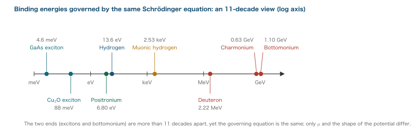

Chapter 7Bound States — From Hydrogen to Hadrons
In the chapters so far, a particle either flew freely or collided briefly and went its separate way. But almost all the matter we see in nature is a bound state. An atom is an electron bound to a nucleus, a nucleus is a collection of bound nucleons, and the nucleons themselves are bound states of quarks. Unless we understand bound states, we have not understood matter.
The strategy of this chapter is simple. We start from the hydrogen atom, which materials scientists already know perfectly well, and climb up to the hadrons with the same tools. We use just one tool: the Schrödinger equation for the two-body problem.
$$ \left[-\frac{1}{2\mu}\nabla^2 + V(r)\right]\psi(\bm{r}) = E\,\psi(\bm{r}), \qquad \mu = \frac{m_1 m_2}{m_1+m_2} $$Only the reduced mass $\mu$ and the potential $V(r)$ change. An electron and a proton, with $\mu\simeq m_e$ and $V=-\alpha/r$, give the hydrogen atom. An electron and a positron, with $\mu = m_e/2$, give positronium. An electron and a hole in a semiconductor, with $\mu\sim 0.06\,m_0$ and $V=-e^2/(4\pi\epsilon_0\epsilon_r r)$, give a Wannier exciton. A charm quark and an anticharm quark, with $\mu = m_c/2$ and $V=-\tfrac{4}{3}\alpha_s/r + a r$, give charmonium. The binding energies differ by eleven orders of magnitude, from $4\ \mathrm{meV}$ (the exciton in GaAs) to $1\ \mathrm{GeV}$ (bottomonium), yet the equation is the same. This sense of unity is what we hope you will savor in this chapter.
There is another theme in this chapter. A bound state exposes the details of the interaction acting within it in the form of a “fine structure of the energy levels.” The $10.97\ \mathrm{GHz}$ fine structure of hydrogen teaches us about relativity, the $1058\ \mathrm{MHz}$ Lamb shift about the quantum fluctuations of the vacuum (renormalization, Chapter 10), and the $1420\ \mathrm{MHz}$ hyperfine splitting about the magnetic moment of the proton. By the same logic, the $113\ \mathrm{MeV}$ mass difference between $J/\psi$ and $\eta_c$ tells us the strength of the spin-spin interaction between quarks, and the very existence of the $\Delta^{++}$ tells us that a color degree of freedom is necessary. The levels are a ruler with which to test a theory.
And the connection to materials science is not a metaphor but a matter of everyday practice. Positron annihilation lifetime spectroscopy (PALS) is a real materials-characterization technique: it exploits the difference between the positronium lifetimes of $125\ \mathrm{ps}$ and $142\ \mathrm{ns}$ to measure the vacancy concentration in metals in units of ppm and the free volume in polymers in units of Å$^3$. In this chapter we write down its principle in equations.
- That the two-body problem reduces to a one-body problem with reduced mass $\mu$, and the derivation of the radial equation
- Deriving the Bohr energy $E_n = -\tfrac{1}{2}\mu\alpha^2/n^2$ of the hydrogen atom in natural units
- The three origins of the fine structure (relativistic correction, spin–orbit coupling, Darwin term), and why they depend only on $j$
- That the Lamb shift comes from vacuum polarization and the self-energy, and computing the vacuum-polarization contribution $-27\ \mathrm{MHz}$ yourself
- The hyperfine splitting and the $21\ \mathrm{cm}$ line—obtaining $1421\ \mathrm{MHz}$ from the Fermi contact term
- That the ground state of positronium lies at $-6.80\ \mathrm{eV}$, and why its hyperfine splitting is $143$ times larger than that of hydrogen (the virtual-annihilation term)
- Obtaining the lifetimes $125\ \mathrm{ps}$ and $142\ \mathrm{ns}$ of para- and ortho-positronium from dimensional analysis of $\alpha^5$ and $\alpha^6$
- Connection to materials science: vacancy and free-volume measurements by PALS, the Tao–Eldrup formula, the $S$ parameter, and $\mu$SR and muonium
- The Cornell potential $V(r) = -\tfrac{4}{3}\alpha_s/r + ar$, and the levels of charmonium and bottomonium
- The spin-spin splitting of quarkonium ($J/\psi$–$\eta_c$, $\Upsilon$–$\eta_b$) and $\abs{\psi(0)}^2$
- The pseudoscalar and vector meson nonets, the Gell-Mann–Okubo mass formula, and the $\eta$–$\eta'$ mixing angle
- That the baryon wave function, a product of color, flavor, spin, and spatial parts, is antisymmetric as a whole, and that the $\Delta^{++}$ requires color
- Comparing the quark-model prediction $\mu_n/\mu_p = -2/3$ for the magnetic moments with the measured value $-0.685$
- Connection to materials science: seeing Wannier excitons, quantum dots, and hyperfine coupling constants in one framework
7.1 The Schrödinger Equation and the Two-Body Problem
7.1.1 Why start from nonrelativistic physics?
It may seem odd to start a particle physics textbook with the Schrödinger equation at this late stage. But there is a reason. A bound state is a state in which the constituent particles are slowly circling around each other.
Let us make a rough estimate. For a Coulomb-type binding, the virial theorem gives $\braket{v}\sim \alpha_{\text{eff}}$ (in natural units, velocity is dimensionless, with $c=1$). For the hydrogen atom, $\braket{v}/c \simeq \alpha = 1/137$, that is, $0.7\%$ of the speed of light. For charmonium, $\braket{v^2}/c^2 \simeq 0.25$, and for bottomonium, $\simeq 0.1$ or so. Both are “reasonably nonrelativistic,” which opens the way to treating relativistic effects as perturbations.
Why does $\alpha$ become a velocity?
The Bohr radius is $a = 1/(\mu\alpha)$, and the momentum there is, from the uncertainty relation, $p\sim 1/a = \mu\alpha$, so the velocity is $v = p/\mu = \alpha$. The coupling constant itself becomes the velocity.
This is an important rule of thumb: a bound system with a small coupling constant is nonrelativistic, and one with a large coupling constant is relativistic. This is precisely the reason why the $\pi$ meson, made of light quarks (with $m_\pi = 139.6\ \mathrm{MeV}$ compared with two constituent quark masses of $\sim336\ \mathrm{MeV}$), cannot be treated within the framework of this chapter. We will view the $\pi$ meson from a different perspective in Section 7.5 (as the Nambu–Goldstone boson of chiral symmetry, Chapter 13).
7.1.2 Center-of-mass coordinate and relative coordinate
Suppose two particles of masses $m_1,m_2$ interact through a potential $V(\abs{\bm{r}_1-\bm{r}_2})$ that depends only on their relative distance. The Hamiltonian is
$$ \begin{equation} H = \frac{\bm{p}_1^2}{2m_1} + \frac{\bm{p}_2^2}{2m_2} + V(\abs{\bm{r}_1-\bm{r}_2}) \label{eq:7-2body} \end{equation} $$Derivation: Two-body problem → one-body problem with the reduced mass
Step 1: Define the new coordinates. Let the center-of-mass coordinate $\bm{R}$ and the relative coordinate $\bm{r}$ be
$$ \bm{R} \equiv \frac{m_1\bm{r}_1 + m_2\bm{r}_2}{m_1+m_2}, \qquad \bm{r} \equiv \bm{r}_1 - \bm{r}_2 $$Solving in reverse gives $\bm{r}_1 = \bm{R} + \dfrac{m_2}{M}\bm{r}$ and $\bm{r}_2 = \bm{R} - \dfrac{m_1}{M}\bm{r}$ (where $M\equiv m_1+m_2$).
Step 2: Rewrite the kinetic energy. Differentiating with respect to time gives the velocities $\dot{\bm{r}}_1 = \dot{\bm{R}} + (m_2/M)\dot{\bm{r}}$ and $\dot{\bm{r}}_2 = \dot{\bm{R}} - (m_1/M)\dot{\bm{r}}$. Substituting these into $T = \tfrac12 m_1\dot{\bm{r}}_1^2 + \tfrac12 m_2\dot{\bm{r}}_2^2$:
$$ T = \tfrac12 m_1\left(\dot{\bm{R}} + \tfrac{m_2}{M}\dot{\bm{r}}\right)^2 + \tfrac12 m_2\left(\dot{\bm{R}} - \tfrac{m_1}{M}\dot{\bm{r}}\right)^2 $$The cross term vanishes because $m_1 (m_2/M) - m_2(m_1/M) = 0$. This is the benefit of choosing the center-of-mass coordinate. What remains is
$$ T = \tfrac12 (m_1+m_2)\dot{\bm{R}}^2 + \tfrac12 \frac{m_1 m_2^2 + m_2 m_1^2}{M^2}\dot{\bm{r}}^2 = \tfrac12 M\dot{\bm{R}}^2 + \tfrac12 \mu\,\dot{\bm{r}}^2 $$Here, in the last step we used $m_1m_2^2 + m_2m_1^2 = m_1m_2(m_1+m_2) = m_1m_2 M$ and defined
as the reduced mass.
Step 3: Quantize. The canonical momenta are $\bm{P} = M\dot{\bm{R}}$ and $\bm{p} = \mu\dot{\bm{r}}$, and $[\,R_i,P_j\,]=\ii\delta_{ij}$ and $[\,r_i,p_j\,]=\ii\delta_{ij}$ hold (because the transformation is a canonical transformation). Therefore
$$ \begin{equation} H = \frac{\bm{P}^2}{2M} + \left[\frac{\bm{p}^2}{2\mu} + V(r)\right] \label{eq:7-Hsep} \end{equation} $$Step 4: Separation of variables. The first term of Eq. \eqref{eq:7-Hsep} depends only on $\bm{R}$, and the part in square brackets depends only on $\bm{r}$, so the wave function factorizes into a product, $\Psi(\bm{R},\bm{r}) = \ee^{\ii\bm{P}\cdot\bm{R}}\psi(\bm{r})$. The center of mass simply flies freely, and what carries all of the internal structure is
With this, the two-body problem has turned into a one-body problem in which a particle of mass $\mu$ moves around a fixed center of force.
7.1.3 Central force field and the radial equation
If $V$ is a function of $r=\abs{\bm{r}}$ alone, the system is rotationally symmetric. As we saw in Chapter 5, rotational symmetry implies conservation of the angular momentum $\bm{L}$, and $[H,\bm{L}^2]=[H,L_z]=0$ holds. Therefore we can take simultaneous eigenfunctions of $H,\bm{L}^2,L_z$:
$$ \begin{equation} \psi_{n\ell m}(\bm{r}) = R_{n\ell}(r)\,Y_{\ell}^{m}(\theta,\varphi) \label{eq:7-sep} \end{equation} $$The spherical harmonics $Y_\ell^m$ satisfy $\bm{L}^2 Y_\ell^m = \ell(\ell+1)Y_\ell^m$ and $L_z Y_\ell^m = m Y_\ell^m$. In spherical coordinates the Laplacian reads
$$ \nabla^2 = \frac{1}{r^2}\frac{\partial}{\partial r}\left(r^2\frac{\partial}{\partial r}\right) - \frac{\bm{L}^2}{r^2} $$Substituting Eq. \eqref{eq:7-sep} into Eq. \eqref{eq:7-schr} and cancelling $Y_\ell^m$, we obtain the radial equation
$$ \begin{equation} -\frac{1}{2\mu}\frac{1}{r^2}\frac{\dd}{\dd r}\left(r^2\frac{\dd R}{\dd r}\right) + \left[V(r) + \frac{\ell(\ell+1)}{2\mu r^2}\right] R = E\,R \label{eq:7-radial} \end{equation} $$Further, setting $u(r)\equiv rR(r)$ gives exactly the form of a one-dimensional Schrödinger equation:
For all the bound systems treated in this chapter, it suffices to insert $V(r)$ into Eq. \eqref{eq:7-radial-u}. The only differences are $V$ and $\mu$.
Math Note: The centrifugal barrier and the special treatment of $\ell=0$
The second term of $V_{\text{eff}}$, $\ell(\ell+1)/(2\mu r^2)$, is the centrifugal barrier. For $\ell\ge1$ it diverges to $+\infty$ as $r\to0$, so the wave function is expelled from the origin: since $R_{n\ell}(r)\propto r^\ell$, we have $\abs{\psi(0)}^2 = 0$.
Only $\ell=0$ ($s$ waves) has $\abs{\psi(0)}^2\ne0$. This single point matters again and again in this chapter. The hyperfine splitting (the Fermi contact term), the Darwin term, the Lamb shift, the annihilation rate of positronium, and the decay width of quarkonium into lepton pairs—all of these are proportional to $\abs{\psi(0)}^2$, so they appear only in $s$-wave states. All the physics in which “the probability that two particles are at the same place” matters gathers here.
7.2 The Hydrogen Atom — Four Levels
7.2.1 Bohr levels ($O(\alpha^2)$)
We begin with the coarsest picture. In natural units ($\hbar=c=1$, with $e^2/4\pi=\alpha$ in Heaviside–Lorentz units), the Coulomb potential between the electron and the proton is
$$ \begin{equation} V(r) = -\frac{\alpha}{r},\qquad \alpha = \frac{1}{137.036} \label{eq:7-coulomb} \end{equation} $$The well-known solution is
The Bohr radius is $a = 1/(\mu\alpha)$. Setting $\mu\simeq m_e$, we obtain
$$ E_1 = -\tfrac12 (0.511\times10^6\ \mathrm{eV})\times(1/137.036)^2 = -13.606\ \mathrm{eV} $$which reproduces the Rydberg energy $\mathrm{Ry}$. Correcting for the fact that the proton is not infinitely heavy by using the reduced mass, we get
$$ \mu = \frac{m_e m_p}{m_e+m_p} = \frac{m_e}{1+m_e/m_p} = \frac{m_e}{1+1/1836.15}, \qquad E_1 = -13.6057\times0.999456 = -13.5983\ \mathrm{eV} $$which agrees with the measured ionization energy of hydrogen, $13.5984\ \mathrm{eV}$. Up to this point, this is undergraduate quantum mechanics.
Physical Meaning: Organizing by powers of $\alpha$
From this section on, we view the energy levels of hydrogen as a hierarchy organized by powers of $\alpha$. This is the most important idea of this chapter.
- $O(\alpha^2 m_e)$: Bohr levels. $13.6\ \mathrm{eV}$. Nonrelativistic Coulomb binding.
- $O(\alpha^4 m_e)$: fine structure. On the scale of $1.4\times10^{-3}\ \mathrm{eV}$. Relativistic correction, spin–orbit coupling, and the Darwin term.
- $O(\alpha^5 m_e)$: Lamb shift. On the scale of $1.06\times10^{-5}\ \mathrm{eV}$. Quantum field theory (radiative corrections).
- $O(\alpha^4 m_e\cdot m_e/m_p)$: hyperfine structure. $5.9\times10^{-6}\ \mathrm{eV}$. Coupling to the nuclear spin.
The steps are not uniform, and each step must be treated separately. From the Bohr levels to the fine structure the factor is $\alpha^2\simeq5.3\times10^{-5}$; from the fine structure to the Lamb shift it is $\alpha\simeq7.3\times10^{-3}$ (in practice a factor of $1/\pi$ and the Bethe logarithm also enter, so it is about $10^{-2}$); and from the fine structure to the hyperfine structure it is smaller by about $m_e/m_p\simeq5.4\times10^{-4}$. “Expanding in $\alpha$” is the basic method of particle physics, and the hydrogen atom is its best classroom.
7.2.2 Fine structure ($O(\alpha^4)$) — three origins
If we expand the relativistic effects in $v/c$, three terms appear at $O(v^2/c^2)$. Let us look at them in turn.
Derivation (1): Relativistic kinetic-energy correction
The relativistic energy is $E = \sqrt{p^2+m^2}$ (Chapter 4). Expanding in $p/m$:
$$ \sqrt{p^2+m^2} = m\sqrt{1+\frac{p^2}{m^2}} = m\left[1 + \frac{1}{2}\frac{p^2}{m^2} - \frac{1}{8}\frac{p^4}{m^4} + \cdots\right] = m + \frac{p^2}{2m} - \frac{p^4}{8m^3} + \cdots $$We take the rest energy $m$ as the reference and discard it; the second term is the ordinary kinetic energy. Hence the leading relativistic correction is
$$ \begin{equation} H_{\text{rel}} = -\frac{\bm{p}^4}{8m^3} \label{eq:7-Hrel} \end{equation} $$Estimate of the size: since $\braket{p^2/2m}\sim\alpha^2 m$, we have $\braket{p^4/8m^3}\sim \alpha^4 m$, which is indeed the scale of the fine structure, as expected. The sign is negative; that is, it lowers all levels. The faster the electron moves (that is, the smaller the value of $\ell$, since such a state lies closer in), the more the level is lowered.
Computing the expectation value (using $\braket{1/r}=1/(n^2a)$ and $\braket{1/r^2}=1/[(\ell+\tfrac12)n^3a^2]$), we find
$$ \braket{H_{\text{rel}}} = -\frac{(E_n)^2}{2m}\left[\frac{4n}{\ell+\tfrac12}-3\right] $$Derivation (2): Spin–orbit coupling and the Thomas factor
Step 1: The magnetic field seen by the electron. In the rest frame of the electron, the proton appears to orbit around the electron. The magnetic field produced by this circular current is, from the Biot–Savart law,
$$ \bm{B} = -\frac{\bm{v}\times\bm{E}}{c^2} \quad\longrightarrow\quad \bm{B} = \frac{1}{e\,m}\frac{1}{r}\frac{\dd V}{\dd r}\,\bm{L} $$(We used $\bm{E} = -(\bm{r}/r)(\dd V/\dd r)/(-e)$ and $\bm{L}=m\bm{r}\times\bm{v}$. In natural units $c=1$.)
Step 2: Coupling to the spin magnetic moment of the electron. The magnetic moment of the electron is $\bm{\mu}_e = -g_e (e/2m)\bm{S}$ with $g_e\simeq2$ (the Dirac equation of Chapter 9 predicts $g=2$). The coupling energy is $-\bm{\mu}_e\cdot\bm{B} = (e/m)\bm{S}\cdot\bm{B}$ (for $g_e=2$); this cancels against the $1/e$ in $\bm{B}$, so the charge drops out, and
$$ H_{\text{SO}}^{(\text{naive})} = \frac{1}{m^2}\frac{1}{r}\frac{\dd V}{\dd r}\,\bm{S}\cdot\bm{L} $$Step 3: Thomas precession (the factor $1/2$). Here there is a famous pitfall. The rest frame of the electron is accelerating, so it is not an inertial frame. The composition of two nonparallel Lorentz boosts is not a pure boost but is accompanied by a rotation (the Wigner rotation), and this gives an extra contribution to the precession of the spin. When this is treated correctly, the above expression becomes exactly half:
$$ \begin{equation} H_{\text{SO}} = \frac{1}{2m^2}\frac{1}{r}\frac{\dd V}{\dd r}\,\bm{S}\cdot\bm{L} = \frac{\alpha}{2m^2 r^3}\,\bm{S}\cdot\bm{L} \label{eq:7-HSO} \end{equation} $$(The last step uses $V=-\alpha/r$, so that $\dd V/\dd r = \alpha/r^2$.) If we expand the Dirac equation nonrelativistically in Chapter 9, the Thomas factor comes out automatically.
Step 4: Eigenvalues of $\bm{S}\cdot\bm{L}$. Let $\bm{J}=\bm{L}+\bm{S}$ be the total angular momentum. From $\bm{J}^2 = \bm{L}^2+\bm{S}^2+2\bm{L}\cdot\bm{S}$ we obtain
$$ \begin{equation} \braket{\bm{S}\cdot\bm{L}} = \tfrac12\left[j(j+1)-\ell(\ell+1)-s(s+1)\right] \label{eq:7-SL} \end{equation} $$We will use this form repeatedly in this chapter (the same formula appears for quarkonium and for baryons).
Derivation (3): The Darwin term — the “trembling” of the electron
The third term has no classical counterpart and is a purely relativistic quantum effect. In the Dirac equation, the position operator contains a rapidly oscillating component (Zitterbewegung, “trembling motion”). Its amplitude is of the order of the Compton wavelength $\lambda_C = 1/m$.
Step 1: Smear out the potential. If the electron is blurred over a region of size $\lambda_C$, the potential it feels is the average over that region. Taylor-expanding with $\bm{\delta}$ the fluctuation, we get
$$ \braket{V(\bm{r}+\bm{\delta})} = V(\bm{r}) + \braket{\bm\delta}\cdot\nabla V + \tfrac12\braket{\delta_i\delta_j}\partial_i\partial_j V + \cdots $$Assuming $\braket{\bm\delta}=0$ and isotropy, $\braket{\delta_i\delta_j} = \tfrac13\braket{\delta^2}\delta_{ij}$, the correction is $\tfrac16\braket{\delta^2}\nabla^2 V$.
Step 2: Take the coefficient from the Dirac equation. The exact calculation (Chapter 9) gives a coefficient corresponding to $\braket{\delta^2}\to\tfrac{3}{4m^2}$, so that
$$ \begin{equation} H_{\text{Darwin}} = \frac{1}{8m^2}\nabla^2 V = \frac{\alpha}{8m^2}\nabla^2\!\left(-\frac{1}{r}\right) = \frac{\pi\alpha}{2m^2}\,\delta^3(\bm{r}) \label{eq:7-Darwin} \end{equation} $$Here we used $\nabla^2(1/r) = -4\pi\delta^3(\bm{r})$ (Appendix A).
Step 3: It acts only on $\ell=0$. Because of the delta function, the expectation value is proportional to $\abs{\psi(0)}^2$. As stated in Section 7.1.3, this is nonzero only for $s$ waves:
$$ \braket{H_{\text{Darwin}}} = \frac{\pi\alpha}{2m^2}\abs{\psi_{n00}(0)}^2 = \frac{\pi\alpha}{2m^2}\cdot\frac{1}{\pi n^3 a^3} = \frac{\alpha^4 m}{2n^3} \qquad(\ell=0\ \text{only}) $$The sign is positive, and it raises the $s$-wave levels. Physically, the blurred electron feels the deep well at the origin “averaged out,” so the binding is weakened.
Result for the fine structure: determined by $j$ alone
Adding the three contributions given by Eqs. \eqref{eq:7-Hrel}, \eqref{eq:7-HSO}, and \eqref{eq:7-Darwin}, the dependence on $\ell$ cancels miraculously, and the result is a function of the total angular momentum $j$ alone:
This agrees with the exact solution of the Dirac equation (Sommerfeld’s formula) expanded to order $\alpha^2$. The disappearance of $\ell$ is no accident; it is a remnant of the hidden symmetry of the Coulomb problem ($\mathrm{SO}(4)$, the Runge–Lenz vector).
Consequence: $2S_{1/2}$ and $2P_{1/2}$ are degenerate. Within Dirac theory, states with the same $n$ and the same $j$ have exactly the same energy even if $\ell$ differs. What lifts this degeneracy is the Lamb shift of the next subsection.
Numerical Example: Fine-structure splitting for $n=2$
In Eq. \eqref{eq:7-fine}, take $n=2$, $E_2 = -3.4015\ \mathrm{eV}$, and $\alpha^2 = 5.3251\times10^{-5}$.
$j=1/2$ ($2S_{1/2}, 2P_{1/2}$): $\dfrac{2}{1}-\dfrac34 = 1.25$. $\Delta E = -3.4015\times\dfrac{5.3251\times10^{-5}}{4}\times1.25 = -5.660\times10^{-5}\ \mathrm{eV}$
$j=3/2$ ($2P_{3/2}$): $\dfrac{2}{2}-\dfrac34 = 0.25$. $\Delta E = -1.132\times10^{-5}\ \mathrm{eV}$
The width of the splitting is
$$ E(2P_{3/2})-E(2P_{1/2}) = 4.528\times10^{-5}\ \mathrm{eV} = \frac{4.528\times10^{-5}}{4.1357\times10^{-15}}\ \mathrm{Hz} = 10.95\ \mathrm{GHz} $$The measured value is $10.969\ \mathrm{GHz}$ ($0.365\ \mathrm{cm^{-1}}$). In terms of wavelength, this is a microwave of $2.7\ \mathrm{cm}$.
7.2.3 The Lamb shift ($O(\alpha^5)$) — the vacuum moves the levels
In 1947, Lamb and Retherford found by microwave spectroscopy that $2S_{1/2}$ lies higher than $2P_{1/2}$ by about $1000\ \mathrm{MHz}$ (the present precise value is $1057.845(9)\ \mathrm{MHz}$; it was only after the remeasurement by Triebwasser, Dayhoff, and Lamb in the 1950s that the value was fixed to this many digits). Since Dirac theory had predicted that these two levels are exactly degenerate, this was a breakdown of the theory. The result was reported at the Shelter Island conference that same year, and Bethe, on the train home, carried out a nonrelativistic calculation and obtained the number $1040\ \mathrm{MHz}$. This became the starting point of the renormalization of quantum electrodynamics.
There are two causes.
Derivation: Working out the vacuum polarization contribution ourselves ($-27\ \mathrm{MHz}$)
Step 1: The Uehling potential. As we will compute in Chapter 10, a correction containing one $e^+e^-$ loop multiplies the photon propagator by a $q^2$-dependent factor. For $\abs{q}\ll m_e$ (the atomic scale), the correction degenerates into a contact term, and the effective potential is
$$ \begin{equation} \delta V_{\text{VP}}(\bm{r}) = -\frac{4\alpha^2}{15\,m_e^2}\,\delta^3(\bm{r}) \label{eq:7-uehling} \end{equation} $$(the Uehling term). The coefficient $4/15$ is the coefficient obtained by expanding the one-loop vacuum polarization function around $q^2\to0$.
Step 2: The physics of the sign. The negative coefficient of the delta function means that the attraction becomes stronger at the origin ($V$ is lowered). The picture is that vacuum $e^+e^-$ pairs screen the nuclear charge, so that the closer one approaches the nucleus, the more of the “bare charge” one sees and the stronger the attraction becomes. This is the same logic as the screening of a charge inside a dielectric, and the sign is the same too (the running coupling constant of Chapter 10).
Step 3: Take the expectation value. It is nonzero only for $s$ waves; with $\abs{\psi_{n00}(0)}^2 = 1/(\pi n^3 a^3)$ and $a = 1/(m_e\alpha)$,
$$ \Delta E_{\text{VP}} = -\frac{4\alpha^2}{15 m_e^2}\cdot\frac{m_e^3\alpha^3}{\pi n^3} = -\frac{4}{15\pi}\frac{\alpha^5 m_e}{n^3} $$Step 4: Insert numbers. With $\alpha^5 m_e c^2 = 1.0574\times10^{-5}\ \mathrm{eV}$ and $n=2$:
$$ \Delta E_{\text{VP}} = -\frac{4}{15\pi}\cdot\frac{1.0574\times10^{-5}}{8}\ \mathrm{eV} = -1.1220\times10^{-7}\ \mathrm{eV} = -27.1\ \mathrm{MHz} $$This agrees with the literature value $-27.1\ \mathrm{MHz}$. Since vacuum polarization lowers the $2S$ level, it acts in the opposite direction to the observation that $2S$ lies higher than $2P$.
Derivation: The full one-loop correction to the $2S$ level (self-energy + anomalous magnetic moment + vacuum polarization)
Step 1: The fluctuating electron. The electron is shaken by the fluctuations of the electromagnetic field that it creates itself, and its position is spread by $\braket{(\delta r)^2}$. Smearing the potential with the same logic as for the Darwin term, we get
$$ \Delta E = \tfrac16\braket{(\delta r)^2}\braket{\nabla^2 V} = \tfrac16\braket{(\delta r)^2}\cdot 4\pi\alpha\abs{\psi(0)}^2 $$Step 2: The size of the fluctuations. The amplitude of the forced oscillation in response to a vacuum fluctuation of frequency $\omega$ is $\delta r_\omega \sim eE_\omega/(m\omega^2)$. Summing up the zero-point energy of the vacuum, a logarithmically divergent integral
$$ \braket{(\delta r)^2} \sim \frac{2\alpha}{\pi m_e^2}\int \frac{\dd\omega}{\omega} $$appears. This is the heart of the problem.
Step 3: Fix the cutoff by physics (the prototype of renormalization). Bethe’s insight was to see that this logarithmic divergence is a “mass renormalization that occurs even for a free electron” and does not affect the difference of the binding energies. When we take the difference, the integral is cut off naturally, with the upper limit $\omega\sim m_e$ (the relativistic region) and the lower limit the typical atomic excitation energy $\braket{\omega}_{\text{Bethe}}$. Writing the result including the relativistic constant term that was fixed later, we have
$$ \begin{equation} \Delta E_{1\text{loop}}(nS) = \frac{4\alpha^5 m_e}{3\pi n^3} \left[\ln\frac{1}{\alpha^2} - \ln\frac{k_0}{\mathrm{Ry}} + \frac{19}{30}\right] \qquad(\ell=0) \label{eq:7-lamb-se} \end{equation} $$Here $\ln(k_0/\mathrm{Ry}) = 2.812$ is the Bethe logarithm of the $2S$ state (a constant evaluated numerically).
The constant $19/30$ in the brackets was fixed by the complete one-loop calculation after 1949 (Kroll–Lamb, French–Weisskopf), and it decomposes as
$$ \frac{19}{30} = \underbrace{\frac{11}{24}}_{\text{self-energy proper}} + \underbrace{\frac38}_{\text{anomalous magnetic moment}} - \underbrace{\frac15}_{\text{vacuum polarization}} $$That is, Eq. \eqref{eq:7-lamb-se} is not a formula for the self-energy alone; it is the total one-loop correction received by the $2S$ level, and it already contains the vacuum polarization $-27.1\ \mathrm{MHz}$ computed separately in the previous box (you can check that multiplying the $-1/5$ term by $\frac{4}{3\pi}\alpha^5m_e/n^3$ gives exactly the expectation value of Eq. \eqref{eq:7-uehling}). The nonrelativistic calculation that Bethe did on the train in 1947 contained neither $19/30$ nor vacuum polarization, and had only the logarithmic term
$$ \Delta E_{\text{Bethe}} = \frac{4\alpha^5 m_e}{3\pi n^3}\ln\frac{m_e}{k_0}, \qquad k_0(2S)\simeq17.8\ \mathrm{Ry} $$(with $\ln(m_e/k_0)=7.65$, this gives $1038\ \mathrm{MHz}$ for $n=2$).
Step 4: Numerical value. For $n=2$,
$$ \frac{4}{3\pi}\cdot\frac{1.0574\times10^{-5}}{8}\ \mathrm{eV}\times\left[9.840-2.812+0.633\right] = 5.610\times10^{-7}\times7.662\ \mathrm{eV} = 4.298\times10^{-6}\ \mathrm{eV} $$that is, $1039\ \mathrm{MHz}$. This is the one-loop shift of the $2S_{1/2}$ level alone, not the $2S$–$2P$ interval. That it is almost the same number as Bethe’s value of $1040\ \mathrm{MHz}$ is the result of an accidental cancellation between $19/30\simeq0.63$ and the difference in how he chose his cutoff.
Step 5: Subtract the $2P_{1/2}$ part as well. $2P_{1/2}$ is also lowered by about $12.9\ \mathrm{MHz}$ by the anomalous magnetic moment and the shift of the spin–orbit coupling (for $\ell\ne0$ the Bethe logarithm is small, $\ln[k_0(2P)/\mathrm{Ry}]=-0.030$, and the $-1/6$ from the anomalous magnetic moment plays the leading role). Therefore
$$ \Delta E(2S_{1/2}) - \Delta E(2P_{1/2}) = 1039 + 13 = 1052\ \mathrm{MHz} $$is the $O(\alpha^5 m_e)$, that is, the one-loop, Lamb shift. In terms of the breakdown in Table 7.1, $1010+68-27.1 = 1051\ \mathrm{MHz}$ corresponds to this (we have merely divided it up as self-energy proper $+1010$, anomalous magnetic moment $+68$, and vacuum polarization $-27.1$; the content is the same), and the remaining $6$–$7\ \mathrm{MHz}$ relative to the measured $1057.8\ \mathrm{MHz}$ comes from higher-order binding corrections and the finite size of the proton.
| Contribution | Size (MHz) | Physical origin |
|---|---|---|
| Electron self-energy | $+1010$ | Fluctuation of the position through emission and reabsorption of a virtual photon |
| Vacuum polarization (Uehling) | $-27.1$ | Screening of the nuclear charge by vacuum $e^+e^-$ pairs |
| Anomalous magnetic moment $a_e = (g-2)/2$ | $+68$ | Darwin-type contact term due to $g_e\ne2$ ($2S$) and shift of the spin–orbit coupling ($2P_{1/2}$) |
| Higher-order binding corrections ($\alpha(Z\alpha)^5$ and beyond) | $+7$ | Higher-order terms of the $Z\alpha$ expansion of the one-loop correction and recoil corrections (two-loop is about $0.1\ \mathrm{MHz}$) |
| Finite size of the proton | $+0.14$ | $\propto r_p^2\abs{\psi(0)}^2$ ($r_p=0.84\ \mathrm{fm}$; Exercise 7.2(2)) |
| Theoretical total | $1058$ | |
| Measured value | $1057.845(9)$ | Precision measurements since Lamb–Retherford (1947) |
Why was the Lamb shift a turning point in particle physics?
Until then, quantum field theory was thought to be useless, because whenever one tried to compute a correction, infinities appeared. The Lamb shift showed that “even if infinities appear, the difference of observables is finite, and it agrees with experiment to a precision of $10^{-5}$.” This gave rise to the renormalization theory of Tomonaga, Schwinger, Feynman, and Dyson (Chapter 10), and made quantum electrodynamics the most precisely tested theory in physics.
Translated into the language of materials science, it goes like this. Bare parameters (the bare electron mass, the bare charge) cannot be observed. What can be observed are only the renormalized parameters, dressed by the environment (vacuum or medium). The effective mass $m^*$ of an electron in a solid, the screened Coulomb interaction $e^2/(4\pi\epsilon_0\epsilon_r r)$, the polaron mass of an electron dragging phonons along—all are products of the same idea. “Bare quantities cannot be measured; only dressed quantities can” is one of the deepest lessons shared by particle physics and condensed matter physics.
7.2.4 Hyperfine structure and the $21\ \mathrm{cm}$ line
The last tier is the coupling between the magnetic field produced by the proton spin and the electron spin. Unlike the previous three, this is not a problem of the electron alone, so a factor $m_e/m_p$ enters and the scale becomes $\alpha^4 m_e\cdot(m_e/m_p)$.
Derivation: Obtaining the $21\ \mathrm{cm}$ line from the Fermi contact term
Step 1: Write down the magnetic moments.
$$ \bm{\mu}_e = -g_e\frac{e}{2m_e}\bm{S}_e\ \ (g_e\simeq2), \qquad \bm{\mu}_p = +g_p\frac{e}{2m_p}\bm{S}_p\ \ (g_p = 5.586) $$The proton’s $g_p$ is not $2$ because the proton is not a point particle but a composite of quarks (in Section 7.6 we will see that $g_p\ne2$ can be understood as a consequence of the proton being a composite state of quarks. What the quark model predicts without any parameters is the ratio $\mu_n/\mu_p=-2/3$; the measured value of $\mu_p$ itself is used as input to read off the constituent quark mass).
Step 2: The magnetic field produced by a point magnetic dipole. When a dipole $\bm{\mu}_p$ sits at the origin, the magnetic field has, in addition to the dipole field far away, a contact term at the origin:
$$ \bm{B}(\bm{r}) = \frac{\mu_0}{4\pi}\left[\frac{3(\bm{\mu}_p\cdot\hat{r})\hat{r}-\bm{\mu}_p}{r^3}\right] + \frac{2\mu_0}{3}\bm{\mu}_p\,\delta^3(\bm{r}) $$For an $s$ wave the wave function is spherically symmetric, so the angular average of the first term (the dipole–dipole term) vanishes. Only the contact term remains.
Step 3: The interaction energy. The Hamiltonian keeping only the contact term is $H = -\tfrac23\,\bm{\mu}_e\cdot\bm{\mu}_p\,\delta^3(\bm{r})$ (natural units, $\mu_0=1$). Substituting the expressions from Step 1 gives
$$ H_{\text{hf}} = \frac{2}{3}\,g_e g_p\,\frac{e^2}{4m_em_p}\,\braket{\bm{S}_e\cdot\bm{S}_p}\,\delta^3(\bm{r}) = \frac{2\pi\alpha\,g_e g_p}{3\,m_e m_p}\,\bm{S}_e\cdot\bm{S}_p\;\delta^3(\bm{r}) $$(We used $e^2 = 4\pi\alpha$.) Taking the expectation value, $\delta^3(\bm{r})$ picks out $\abs{\psi(0)}^2$. Substituting $g_e=2$ and $\abs{\psi_{n00}(0)}^2 = m_e^3\alpha^3/(\pi n^3)$ and simplifying, we obtain
Here $\braket{\bm{S}_e\cdot\bm{S}_p}$ is, in terms of the total spin $\bm{S}=\bm{S}_e+\bm{S}_p$,
$$ \braket{\bm{S}_e\cdot\bm{S}_p} = \tfrac12\left[S(S+1)-\tfrac34-\tfrac34\right] = \begin{cases} +\tfrac14 & (S=1,\ \text{triplet}) \\[2pt] -\tfrac34 & (S=0,\ \text{singlet})\end{cases} $$Step 4: Evaluate the splitting numerically. The difference between the triplet and the singlet is $\tfrac14-(-\tfrac34)=1$, so the splitting at $n=1$ is
$$ \Delta E_{\text{hf}} = \frac43 \times 5.586\times\frac{1}{1836.15}\times1.4490\times10^{-3}\ \mathrm{eV} = 5.877\times10^{-6}\ \mathrm{eV} $$Converting to frequency and wavelength,
$$ \nu = \frac{5.877\times10^{-6}}{4.1357\times10^{-15}} = 1421\ \mathrm{MHz}, \qquad \lambda = \frac{c}{\nu} = 21.1\ \mathrm{cm} $$The measured values are $\nu = 1420.405751768\ \mathrm{MHz}$ and $\lambda = 21.106\ \mathrm{cm}$. The agreement is to $0.05\%$, and the residual comes from the reduced-mass correction, the relativistic correction to the bound state, the radiative corrections of QED (such as $g_e = 2(1+a_e)$), and the correction due to the internal structure of the proton (the Zemach radius). Note also the large number of digits in the measured value: this is one of the most precisely measured quantities in physics.
Physical Meaning: The $21\ \mathrm{cm}$ line measures the universe
The lifetime of the triplet is extremely long (since this is a magnetic dipole transition, $A\sim 2.9\times10^{-15}\ \mathrm{s^{-1}}$, a lifetime of about $1100$ ten-thousand years, that is, 11 million years). It can hardly be observed in the laboratory, but a galaxy contains some $10^{67}$ neutral hydrogen atoms (a neutral-hydrogen mass of $\sim5\times10^9\,M_\odot$), so when integrated over them it shines brightly. The $21\ \mathrm{cm}$ line is the main observational tool for measuring the distribution and line-of-sight velocity of interstellar neutral hydrogen, and it was also through this line that the existence of dark matter was suggested by the rotation curves of galaxies.
Moreover, on the metal plaque of the Pioneer probes, the wavelength of $21\ \mathrm{cm}$ and the period of $1420\ \mathrm{MHz}$ are engraved as a “universal yardstick shared by the cosmos.” The hyperfine splitting of a bound state thus serves as humanity’s calling card.
Connection to Materials Science: Hyperfine interactions are NMR and EPR themselves
Eq. \eqref{eq:7-hf} is not a formula of particle physics. It is a formula used daily in solid-state physics and chemistry. Let us rewrite it. The contact interaction between a nuclear spin $\bm{I}$ and an electron spin $\bm{S}$ is
$$ \begin{equation} H = A\,\bm{I}\cdot\bm{S}, \qquad A = \frac{2\mu_0}{3}g_e\mu_B\,g_N\mu_N\,\abs{\psi(0)}^2 \label{eq:7-Aiso} \end{equation} $$Here $A$ is the isotropic hyperfine coupling constant (the Fermi contact term). Its uses in measurement and calculation are as follows.
- EPR/ESR: The splitting in the EPR spectrum of a radical or a transition-metal center is directly $A$. Since $A\propto\abs{\psi(0)}^2$, one can read off directly how much of the unpaired electron sits on the nucleus (its $s$ character). In first-principles calculations (DFT) as well, $A$ is a standard output quantity obtained by integrating $\abs{\psi(0)}^2$.
- Knight shift: The amount by which the nuclear NMR resonance frequency in a metal is shifted relative to that in an insulator is $K = \frac{8\pi}{3}\braket{\abs{\psi_{k_F}(0)}^2}_F\,\chi_s^{\rm P}$ (cgs). That is, it measures the product of $\abs{\psi(0)}^2$ of the electrons on the Fermi surface and the Pauli susceptibility $\chi_s^{\rm P}$, and $K$ is proportional to the coupling constant $A$ of the contact interaction. In superconductors, the temperature dependence of $K$ provides decisive evidence for distinguishing spin-singlet from spin-triplet pairs.
- Mössbauer isomer shift: The effect of the nuclear radius changing upon excitation, $\delta\propto\abs{\psi(0)}^2\Delta\braket{r_N^2}$. It is the standard method for determining the oxidation state and spin state of Fe.
- Decoherence of nuclear-spin qubits: For qubits such as the diamond NV center and Si:P, the main source of dephasing is the $A\,\bm{I}\cdot\bm{S}$ coupling to the surrounding $^{13}$C and $^{29}$Si nuclear spins. Reducing this by isotope enrichment is the standard way to obtain long coherence times.
In other words, the formula for the $21\ \mathrm{cm}$ line of hydrogen is used as it is, without changing the symbols, in the materials laboratory. The only difference is whether $\abs{\psi(0)}^2$ refers to the hydrogen $1s$ orbital or to the wave function of a defect level.
7.3 Positronium — A Bound State of Matter and Antimatter
7.3.1 Why the ground state is at $-6.8\ \mathrm{eV}$
A bound state of a positron $e^+$ and an electron $e^-$ is called positronium (Ps). It was discovered by Deutsch in 1951. The potential is exactly the same $-\alpha/r$ as in hydrogen. The only difference is the reduced mass:
$$ \mu_{\text{Ps}} = \frac{m_e\cdot m_e}{m_e+m_e} = \frac{m_e}{2} $$Hence, from Eq. \eqref{eq:7-bohr},
This is exactly half the hydrogen value. The Bohr radius, conversely, is doubled:
$$ a_{\text{Ps}} = \frac{1}{\mu\alpha} = \frac{2}{m_e\alpha} = 2a_0 = 1.058\ \text{Å} $$The 1S–2S transition energy is $6.803\times(1-1/4) = 5.1021\ \mathrm{eV}$, which agrees with the measured value $1\,233\,607\,216.4\ \mathrm{MHz}$ ($= 5.1018\ \mathrm{eV}$) to a precision of $10^{-4}$. The residual $7\times10^{-5}$ (about $0.08\ \mathrm{THz}$ in frequency) is a correction of order $O(\alpha^4m_e)$, the same order as the fine and hyperfine splittings we will see in the next subsection. It is a pleasure to see that such an extremely simple operation as “just halve the reduced mass” is verified with such precision.
Caution: In positronium the relativistic corrections are not the same as in hydrogen
Once we include the fine structure, we cannot simply use the hydrogen formula. There are two reasons.
- Both particles move: in hydrogen the proton can be regarded as practically at rest, but in Ps the two particles move with the same speed, so both the relativistic corrections and the spin–orbit coupling receive contributions from both particles.
- There is an annihilation channel: $e^+e^-$ can disappear into a photon. This gives rise to the virtual-annihilation term, an interaction that does not exist in hydrogen (Section 7.3.2).
As a result, the fine structure of Ps cannot be written as a simple rescaling of hydrogen; it has its own formula, of order $\alpha^4 m_e$.
7.3.2 Hyperfine splitting — why it is $143$ times larger than in hydrogen
The $1S$ hyperfine splitting of hydrogen is $1420\ \mathrm{MHz}$, while that of positronium is $203.4\ \mathrm{GHz}$. In energy, the comparison is $5.9\times10^{-6}\ \mathrm{eV}$ versus $8.4\times10^{-4}\ \mathrm{eV}$, a factor of $143$. Moreover, since the total binding energy of Ps is only half that of hydrogen, when normalized by the binding energy it is relatively $286$ times larger. Why is it so large? There are two reasons.
Derivation: Breakdown of the Ps hyperfine splitting $\tfrac{7}{12}\alpha^4 m_e$
Step 1: The contact term (in the hydrogen formula, $m_p\to m_e$ and $g_p\to g_e = 2$). We reuse Eq. \eqref{eq:7-hf} as it stands. However, we must not forget that the wave function has spread out by a factor of two, so $\abs{\psi(0)}^2$ becomes $1/8$ of its hydrogen value:
$$ \abs{\psi_{\text{Ps}}(0)}^2 = \frac{1}{\pi a_{\text{Ps}}^3} = \frac{1}{\pi (2a_0)^3} = \frac18 \abs{\psi_{\text{H}}(0)}^2 $$Therefore
$$ \Delta E_{\text{contact}} = \underbrace{\frac43}_{\text{same}}\times\underbrace{2}_{g_e}\times\underbrace{1}_{m_e/m_e}\times\alpha^4 m_e\times\underbrace{\frac18}_{\abs{\psi(0)}^2} = \frac{1}{3}\alpha^4 m_e $$The ratio to hydrogen is $\dfrac{1/3}{(4/3)(5.586)(1/1836)} = \dfrac{0.3333}{4.057\times10^{-3}} = 82.2$ times. The disappearance of the suppression factor $m_e/m_p$ is the biggest reason. It is simply the statement that the lighter the proton, the larger its magnetic moment.
Step 2: The virtual-annihilation term (absent in hydrogen). An $e^+e^-$ pair can turn into a single photon and then return to $e^+e^-$:
$$ e^+e^- \to \gamma^* \to e^+e^- $$This process is possible only if the intermediate state has the quantum numbers of the photon. As we saw in Chapter 6, the photon has $J^{PC}=1^{--}$, so the $e^+e^-$ system must also have $J^{PC}=1^{--}$. For an $S$-wave ($L=0$) $e^+e^-$ pair, $P=(-1)^{L+1}=-1$ and $C=(-1)^{L+S}$, so $C=-1$ requires $S=1$. That is, only the triplet (ortho-Ps) has a virtual-annihilation term. The singlet (para-Ps) has $C=+1$ and therefore cannot form a one-photon intermediate state.
Calculating this contribution (it can be derived with the Feynman rules of Chapter 10), we obtain
$$ \Delta E_{\text{annih}} = \frac{1}{4}\alpha^4 m_e \qquad(\text{triplet only, shifted upward}) $$Step 3: The total. The difference between the triplet and the singlet is
Step 4: Numerical value. From $\alpha^4 m_e c^2 = 1.4490\times10^{-3}\ \mathrm{eV}$,
$$ \Delta E_{\text{hf}}^{\text{Ps}} = \frac{7}{12}\times1.4490\times10^{-3} = 8.453\times10^{-4}\ \mathrm{eV} = 204.4\ \mathrm{GHz} $$The measured value is $203.3941(16)\ \mathrm{GHz}$ (Ishida et al. 2014). The $0.5\%$ difference is due to an $O(\alpha^5 m_e)$ correction, that is, a correction of relative size $\alpha/\pi$ to the lowest order,
$$ \Delta E_{\text{hf}}^{\text{Ps}} = \frac{7}{12}\alpha^4 m_e\left[1-\frac{\alpha}{\pi}\left(\frac{32}{21}+\frac67\ln2\right)+\cdots\right] $$which almost completely explains it (Karplus–Klein 1952). The bracket equals $1-0.0049$, and $204.39\times0.99508 = 203.38\ \mathrm{GHz}$ agrees with the measurement. The logarithm $\ln\alpha$ first appears at the next order, $O(\alpha^6\ln\alpha)$.
Expressed in frequency, the breakdown is the contact term $116.8\ \mathrm{GHz}$ plus the annihilation term $87.6\ \mathrm{GHz}$. The annihilation term accounts for $43\%$ of the total, and it is exhilarating that “a term that appears only because the partner is an antiparticle” is plainly visible in the measurement.
7.3.3 Para/ortho lifetimes — decay channels fixed by $C$ invariance
As we saw in Chapter 6, the charge-conjugation quantum number of a state of $n$ photons is $C = (-1)^n$. On the other hand, an $e^+e^-$ bound state has $C = (-1)^{L+S}$. Since $C$ is conserved by the electromagnetic interaction, this fixes the selection rule.
| para-Ps ($1^1S_0$) | ortho-Ps ($1^3S_1$) | |
|---|---|---|
| Spin | $S=0$ (singlet) | $S=1$ (triplet, 3 states) |
| $J^{PC}$ | $0^{-+}$ | $1^{--}$ |
| Charge conjugation $C=(-1)^{L+S}$ | $+1$ | $-1$ |
| Allowed number of photons | even (2, 4, …) | odd (3, 5, …; 1 is kinematically forbidden) |
| Main decay | $2\gamma$ (each $511\ \mathrm{keV}$, back-to-back) | $3\gamma$ (continuous spectrum, $\le511\ \mathrm{keV}$) |
| Order of the decay rate | $\alpha^5 m_e$ | $\alpha^6 m_e$ |
| Lifetime in vacuum (calculated) | $124.5\ \mathrm{ps}$ | $138.7\ \mathrm{ns}$ (lowest order) |
| Lifetime in vacuum (measured) | $125.14(3)\ \mathrm{ps}$ | $142.04(1)\ \mathrm{ns}$ |
| Production ratio (statistical factor) | $1/4$ | $3/4$ |
Derivation: The powers of $\alpha$ in the lifetimes and their numerical values
Step 1: The structure of the decay rate. Annihilation requires “the two particles to come to the same point,” so the decay rate is necessarily proportional to $\abs{\psi(0)}^2$. Matching dimensions gives
$$ \Gamma = \sigma v\,\abs{\psi(0)}^2 \times(\text{spin factor}) $$Here $\sigma v$ is the annihilation cross section of a free $e^+e^-$ pair times the relative velocity.
Step 2: para-Ps ($2\gamma$). Since two photons are emitted, the amplitude is $e^2\propto\alpha$ and the rate is $\alpha^2$. The low-velocity annihilation cross section is $\sigma v = \pi\alpha^2/m_e^2$ (the spin-averaged value; Dirac 1930). Only the singlet can go to $2\gamma$, so projecting onto the singlet multiplies this by 4, giving $4\pi\alpha^2/m_e^2$. Including the spin factor correctly, we obtain
$$ \begin{equation} \Gamma(\text{para}) = 4\pi\frac{\alpha^2}{m_e^2}\abs{\psi(0)}^2 = 4\pi\frac{\alpha^2}{m_e^2}\cdot\frac{(m_e\alpha/2)^3}{\pi} = \frac{1}{2}\alpha^5 m_e \label{eq:7-para-rate} \end{equation} $$where we substituted $\abs{\psi(0)}^2 = 1/(\pi a_{\text{Ps}}^3)$ and $a_{\text{Ps}}=2/(m_e\alpha)$. Numerically,
$$ \Gamma = \tfrac12\times1.0574\times10^{-5}\ \mathrm{eV} = 5.287\times10^{-6}\ \mathrm{eV}, \qquad \tau = \frac{\hbar}{\Gamma} = \frac{6.582\times10^{-16}}{5.287\times10^{-6}}\ \mathrm{s} = 124.5\ \mathrm{ps} $$This agrees well with the measured $125.14\ \mathrm{ps}$.
Step 3: ortho-Ps ($3\gamma$). Each additional photon brings a factor of $e$ in the amplitude and $\alpha$ in the rate, so $\Gamma\propto\alpha^6 m_e$. Carrying out the three-body phase-space integral (Ore–Powell 1949), we find
$$ \begin{equation} \Gamma(\text{ortho}) = \frac{2(\pi^2-9)}{9\pi}\,\alpha^6 m_e = 0.06151\,\alpha^6 m_e \label{eq:7-ortho-rate} \end{equation} $$ $$ \Gamma = 0.06151\times7.717\times10^{-8}\ \mathrm{eV} = 4.747\times10^{-9}\ \mathrm{eV}, \qquad \tau = 138.7\ \mathrm{ns} $$Including the $O(\alpha)$ QED correction $\Gamma = \Gamma_0(1-10.286\,\alpha/\pi+\cdots)$ gives $\tau = 142.1\ \mathrm{ns}$, in agreement with the measured $142.04\ \mathrm{ns}$ (Kataoka et al. 2009).
Step 4: The meaning of the ratio. The lifetime ratio is
$$ \frac{\tau_{\text{ortho}}}{\tau_{\text{para}}} = \frac{1/2}{0.06151\,\alpha} = 1114 $$That is, the extra cost $\alpha=1/137$ of one additional photon, together with the phase-space factor alone, produces a lifetime difference of a factor of $10^3$. This factor-of-$10^3$ gap is precisely what makes possible PALS, the materials-evaluation method we will see right after this.
Connection to Materials Science: Counting vacancies with positron annihilation lifetime spectroscopy (PALS)
When positrons emitted from a $^{22}$Na source are injected into a sample, they thermalize on a timescale of $\mathrm{ps}$ and eventually annihilate with electrons, emitting two $\gamma$ rays of $511\ \mathrm{keV}$. In the decay of $^{22}$Na, a $\gamma$ ray of $1274\ \mathrm{keV}$ is emitted almost simultaneously with the positron, so we take this as the signal (start) of “the time the positron was born,” take the $511\ \mathrm{keV}$ ray as “the time of annihilation” (stop), and measure the time difference. This is positron annihilation lifetime spectroscopy (PALS). The time resolution now reaches $150$–$200\ \mathrm{ps}$ FWHM.
(a) Metals and semiconductors: detecting vacancies. A positron has positive charge, so it is repelled by the ion cores. A vacancy (a site from which an atom is missing) has no ion core, so for the positron it becomes a potential well, and the positron is trapped there. A trapped positron sits in a region of low electron density and therefore annihilates less readily, so its lifetime is lengthened.
| Material | Perfect crystal $\tau_b$ | Monovacancy $\tau_{1V}$ | Vacancy cluster |
|---|---|---|---|
| Al | 163 | 250 | $\ge$ 350 |
| Fe | 106 | 175 | $\ge$ 300 |
| Cu | 110 | 180 | $\ge$ 300 |
| Si | 219 | 270 ($V$) | 320 ($V_2$) |
| Polymer (o-Ps in free volume) | — | — | $1\,500$–$5\,000$ |
(b) The two-state trapping model. A positron is trapped from the bulk state into a vacancy at rate $\kappa$, and annihilates in each state at rates $\lambda_b = 1/\tau_b$ and $\lambda_v=1/\tau_v$, respectively. Solving the rate equations, the lifetime spectrum is a sum of two exponentials,
$$ \begin{equation} N(t) = I_1\ee^{-t/\tau_1} + I_2\ee^{-t/\tau_2}, \qquad \tau_1 = \frac{1}{\lambda_b+\kappa},\quad \tau_2 = \frac{1}{\lambda_v} = \tau_v \label{eq:7-trapping} \end{equation} $$and from the intensity ratio the trapping rate can be read off as
Here $\mu_v$ is the specific trapping rate ($\sim10^{14}$–$10^{15}\ \mathrm{s^{-1}}$ atomic fraction$^{-1}$ in metals), and $C_v$ is the vacancy concentration we want to find.
Numerical example (Al): Suppose $\tau_b=163\ \mathrm{ps}$ and $\tau_v=250\ \mathrm{ps}$, and that $I_2 = 0.30$ is obtained experimentally.
$$ \kappa = \frac{0.30}{0.70}\left(\frac{1}{163\times10^{-12}}-\frac{1}{250\times10^{-12}}\right)\ \mathrm{s^{-1}} = 0.4286\times2.135\times10^{9} = 9.15\times10^{8}\ \mathrm{s^{-1}} $$ $$ C_v = \frac{\kappa}{\mu_v} = \frac{9.15\times10^{8}}{2.5\times10^{14}} = 3.7\times10^{-6} = 3.7\ \mathrm{ppm} $$In this case the short-lived component is $\tau_1 = 142\ \mathrm{ps}$ (note that it is shorter than the bulk value of $163\ \mathrm{ps}$, because trapping “eats” the bulk component). There are almost no other methods that can quantify point-defect concentrations at the ppm level nondestructively. This is why the method is used to analyze fatigue, irradiation damage, and precipitates.
Connection to Materials Science: The Tao–Eldrup formula — the lifetime of o-Ps measures the free volume
In insulating, low-density materials such as polymers, zeolites, and porous silica, a positron pulls out one electron and forms positronium. para-Ps annihilates in $125\ \mathrm{ps}$, almost the same as in vacuum, but ortho-Ps can live as long as $142\ \mathrm{ns}$, so in the meantime it undergoes pick-off annihilation with the electrons of the surrounding walls (the $e^+$ in Ps annihilates into $2\gamma$ with an external $e^-$ that is not its partner, mainly in a spin-singlet configuration).
The smaller the hole, the higher the probability of meeting the wall electrons, and the shorter the lifetime. The Tao–Eldrup model quantifies this. Computing, with the ground-state wave function of an infinite well, the probability that o-Ps confined in a spherical void of radius $R$ leaks into an electron layer of thickness $\Delta R = 0.1656\ \mathrm{nm}$, we obtain
The leading $1/2\ \mathrm{ns}$ is the inverse of the spin-averaged annihilation rate $2\ \mathrm{ns^{-1}}$ within the electron layer.
| $R$ (nm) | $\tau_{o\text{-Ps}}$ (ns) | Free volume $\tfrac43\pi R^3$ (Å$^3$) | Typical example |
|---|---|---|---|
| 0.20 | 1.23 | 34 | Dense epoxy |
| 0.25 | 1.65 | 65 | Near PMMA |
| 0.29 | 2.06 | 102 | Polystyrene ($\tau_3\simeq2.1\ \mathrm{ns}$) |
| 0.35 | 2.81 | 180 | Rubbery polymer |
| 0.50 | 5.58 | 524 | Porous membrane, mesoporous material |
In practice, one solves Eq. \eqref{eq:7-tao-eldrup} in reverse for the measured $\tau_3$ (the third component) to obtain $R$, and then, using $I_3$ (the intensity) as an indicator of the Ps formation probability, estimates the free-volume fraction $f_v = C\,I_3\,V_h$. Because the free volume increases abruptly across the glass-transition temperature $T_g$, one can also determine $T_g$ from the kink in $\tau_3(T)$. The $142\ \mathrm{ns}$ of ortho-Ps found in particle-physics textbooks is, as it stands, a measuring instrument for polymer physics.
Supplement: Doppler broadening and the $S$ and $W$ parameters
Another positron method alongside PALS is the measurement of the Doppler broadening of the $511\ \mathrm{keV}$ annihilation $\gamma$ rays (DBS/CDB). The momentum of a thermalized positron is almost zero, so the shift in the $\gamma$-ray energy is determined by the momentum $p_L$ (the component along the $\gamma$-ray direction) of the electron with which it annihilates:
$$ \Delta E = \frac{c\,p_L}{2} $$For $p_L/(m_ec) = 4\times10^{-3}$, $\Delta E = 511\ \mathrm{keV}\times4\times10^{-3}/2 = 1.0\ \mathrm{keV}$. The typical FWHM is about $2.5\ \mathrm{keV}$.
- The $S$ parameter (shape): the area ratio of the central part of the peak. It represents the fraction of annihilations with valence electrons of small momentum. In a vacancy the positron is away from the ion cores, so annihilation with core electrons decreases and $S$ increases.
- The $W$ parameter (wing): the area ratio of the tails. It reflects annihilation with inner-shell electrons of large momentum, so it serves as a fingerprint of which elements surround the vacancy.
Depending on which line the points fall on in an $S$–$W$ plot, we can tell the “type” of defect (a monovacancy, a vacancy–impurity complex, or a precipitate interface). The method is used routinely for evaluating irradiation damage in semiconductor processes, for studies of hydrogen embrittlement of steel, and for comparison with first-principles calculations (the positron wave function and the electron momentum distribution are computed with DFT).
7.3.4 Muonium and $\mu$SR
A cousin of positronium is muonium (Mu $=\mu^+e^-$). It is a hydrogen-like atom in which the positive muon $\mu^+$ ($m_\mu = 105.658\ \mathrm{MeV}$) plays the role of a “light proton.” The reduced mass is
$$ \mu_{\text{Mu}} = \frac{m_e}{1+m_e/m_\mu} = \frac{m_e}{1+1/206.77} = 0.995187\,m_e $$Hence the ground-state energy is $E_1 = -13.5402\ \mathrm{eV}$, which differs from that of hydrogen ($-13.5983\ \mathrm{eV}$) by only $0.4\%$. Chemically, muonium is simply an isotope of hydrogen (its mass is $0.113\,m_\mathrm{H}$, that is, an “ultralight hydrogen” of mass $1/9$).
For the hyperfine splitting it suffices to replace $g_p\to g_\mu\simeq2$ and $m_p\to m_\mu$ in Eq. \eqref{eq:7-hf}. Multiplying by the reduced-mass correction $(1+m_e/m_\mu)^{-3}$, we obtain
$$ \Delta E_{\text{hf}}^{\text{Mu}} = \frac43\times2\times\frac{1}{206.77}\times\frac{1.4490\times10^{-3}\ \mathrm{eV}}{(1.004836)^3} = 1.8420\times10^{-5}\ \mathrm{eV} = 4454\ \mathrm{MHz} $$The measured value is $4463.302\ \mathrm{MHz}$, so the agreement is $0.2\%$. If we take $g_\mu$ to be $2(1+a_\mu)$ ($a_\mu = 1.166\times10^{-3}$, Chapter 10) instead of exactly $2$, we obtain $4459\ \mathrm{MHz}$. However, the electron side should likewise be treated with $g_e = 2(1+a_e)$ ($a_e = 1.160\times10^{-3}$), and when both are included the result is $4464\ \mathrm{MHz}$, which actually exceeds the measured value by about $1\ \mathrm{MHz}$. The remaining $-1\ \mathrm{MHz}$ is the net of the relativistic correction (relative size $\tfrac32\alpha^2$, giving $+0.4\ \mathrm{MHz}$) and the recoil and radiative-recoil corrections (negative). Since the muon is a point particle (it has no structure), this quantity is a pure test of QED, and it is also one of the most precise ways to determine $m_\mu/m_e$.
Connection to Materials Science: $\mu$SR — implanting spin-polarized muons into a crystal
The $\mu^+$ produced in the pion decay $\pi^+\to\mu^+\nu_\mu$ is 100% spin-polarized, thanks to the parity violation we saw in Chapter 6. When it is implanted into a sample, the $\mu^+$ undergoes Larmor precession around the local magnetic field in the crystal. The decay $\mu^+\to e^+\nu_e\bar\nu_\mu$ also violates parity, so the positron is emitted preferentially along the direction of the muon spin. Therefore, by measuring the time dependence of the positron emission direction, we can read off directly the time dependence of the magnetic field at the muon site. This is muon spin rotation, relaxation, and resonance ($\mu$SR).
The gyromagnetic ratio of the $\mu^+$ is $\gamma_\mu/2\pi = 135.5\ \mathrm{MHz/T}$. $\mu$SR is sensitive to internal fields of $10^{-5}$–$10^{-1}\ \mathrm{T}$, and it can directly observe spontaneous magnetization in zero field, which is invisible to NMR, as well as random, slow magnetic fluctuations such as those in spin glasses and spin liquids. In superconductors, the standard method is to measure the magnetic penetration depth $\lambda$ from the field distribution of the vortex lattice.
And here is the connection to the theme of this section. A $\mu^+$ implanted into a semiconductor or an oxide often captures an electron and forms muonium. The hyperfine coupling constant $A$ of muonium tells us at which site of the crystal the $\mu^+$ sits and how much electron density there is at that site. Since muonium is a light isotope of hydrogen, it serves as a probe that experimentally anticipates “how hydrogen would behave if it entered this crystal.” That hydrogen acts as a shallow donor in ZnO and TiO$_2$ was first established by $\mu$SR (the experiments of Cox et al. and the first-principles calculation of Van de Walle). The same reasoning is used in studies of hydrogen-storage materials, proton conductors, and hydrogen embrittlement.
To summarize, the two-body bound states we have studied in this section connect directly to the following three experimental techniques: the lifetime of Ps $\to$ PALS (vacancies and free volume), the annihilation $\gamma$-ray momentum of Ps $\to$ DBS (the $S$ and $W$ parameters), and the hyperfine coupling of Mu $\to$ $\mu$SR (local magnetic fields and the behavior of hydrogen).
7.4 Quarkonium — The Hydrogen Atom of Heavy Quarks
7.4.1 The November Revolution of 1974
In November 1974, Ting’s group at Brookhaven ($p+\mathrm{Be}\to e^+e^-+X$) and Richter’s group at SLAC ($e^+e^-$ collisions) announced, on the same day, a new particle of mass $3.1\ \mathrm{GeV}$. The former named it $J$ and the latter $\psi$, so it is still written with both names, $J/\psi$.
What was shocking was not the mass but the width. The total decay width of the $J/\psi$ is only $\Gamma = 92.6\ \mathrm{keV}$. This is smaller by a factor of $1600$ than the width $147\ \mathrm{MeV}$ of the $\rho$ meson, which decays through the same strong interaction. Converted to a lifetime, this gives
$$ \tau(J/\psi) = \frac{\hbar}{\Gamma} = \frac{6.582\times10^{-16}\ \mathrm{eV\,s}}{9.26\times10^{4}\ \mathrm{eV}} = 7.1\times10^{-21}\ \mathrm{s}, \qquad \tau(\rho) = 4.5\times10^{-24}\ \mathrm{s} $$Why does it live so long? The answer is that the $J/\psi$ is a bound state of $c\bar{c}$ and that its mass $3.097\ \mathrm{GeV}$ lies below the $D\bar{D}$ threshold (the lowest is $2m_{D^0} = 3.730\ \mathrm{GeV}$ for $D^0\bar D^0$; for $D^+D^-$ it is $3.739\ \mathrm{GeV}$). Since decays that carry the charm out are kinematically forbidden, the $c$ and $\bar c$ can only annihilate each other, and that process requires the emission of three gluons and is therefore strongly suppressed (the OZI rule: a process in which the quark lines are cut midway must proceed through gluons and is suppressed by $\alpha_s^3$).
Why is quarkonium the “hydrogen atom of QCD”?
The $c$ quark has $m_c\simeq1.5\ \mathrm{GeV}$ and the $b$ quark has $m_b\simeq4.7\ \mathrm{GeV}$, much heavier than the QCD scale $\Lambda_{\text{QCD}}\simeq0.2\ \mathrm{GeV}$. Being heavy means that the binding radius is small, and at short distances $\alpha_s$ is small because of asymptotic freedom (Chapter 11). Then, from the argument on $\braket{v}\sim\alpha_{\text{eff}}$ in Section 7.1.1, the velocity is also small, and the nonrelativistic Schrödinger equation can be used.
That $\alpha_s$ is small also means, at the same time, that perturbation theory can be used. In other words, quarkonium is a microscope for experimentally “measuring” the QCD potential. It plays the same role that the hydrogen atom played in verifying Coulomb’s law.
7.4.2 The Cornell potential
The form of the potential between quarks is known in two limits.
- Short distance ($r\ll1\ \mathrm{fm}$): single-gluon exchange dominates. Since the gluon is a massless vector particle like the photon, the potential is of the $1/r$ type. However, a color factor is attached, and for a color-singlet $q\bar q$ it is $-\tfrac43\alpha_s/r$ (the coefficient $4/3$ is the $\mathrm{SU}(3)$ Casimir, which we derive in Chapter 11).
- Long distance ($r\gtrsim1\ \mathrm{fm}$): as lattice QCD shows, the color electric field lines are squeezed into a “string,” and the energy is proportional to the distance. $V\to a r$ (linear confinement).
A simple way of joining these two is the Cornell potential, proposed in 1975 by a group at Cornell University:
Physical Meaning: How many tonnes is a string tension of $0.18\ \mathrm{GeV^2}$?
The constant $a$ is the “string tension,” that is, the energy per unit length. Let us convert it to SI units. Using $\hbar c = 0.197327\ \mathrm{GeV\,fm}$, we have
$$ a = 0.18\ \mathrm{GeV^2} = \frac{0.18\ \mathrm{GeV}}{0.197327\ \mathrm{fm}} = 0.912\ \mathrm{GeV/fm} $$ $$ = \frac{0.912\times1.602\times10^{-10}\ \mathrm{J}}{10^{-15}\ \mathrm{m}} = 1.46\times10^{5}\ \mathrm{N} \simeq 15\ \text{tonne-force} $$If we try to pull quarks apart, they are pulled back by a force of $15$ tonne-force, whatever the distance. This is the essence of quark confinement. The farther apart they are pulled, the more work is required, so eventually the energy of the string exceeds the threshold for creating a $q\bar q$ pair, the string breaks, and two new mesons are formed. This is why a quark cannot be extracted alone (Chapter 11).
Incidentally, this property that “the energy increases linearly when the objects are pulled apart” is familiar to materials scientists. Partial dislocations paired across a stacking fault are an example (the stacking-fault energy $\gamma$ gives a restoring force that is constant, independent of distance, so the energy grows in proportion to the separation). In QCD, however, there is a decisive difference: the force does not decrease even when the distance is made infinite.

Derivation: Estimating the binding energy of charmonium with the variational method
Step 1: Choose the trial function. We use the hydrogen-like $1s$ function
$$ \psi_\lambda(r) = \frac{1}{\sqrt{\pi\lambda^3}}\ee^{-r/\lambda} $$where $\lambda$ is the variational parameter.
Step 2: Compute the expectation values. For this function (borrowing the standard results for the hydrogen atom),
$$ \braket{T} = \frac{1}{2\mu\lambda^2},\qquad \braket{\frac{1}{r}} = \frac{1}{\lambda},\qquad \braket{r} = \frac{3\lambda}{2} $$Hence the energy expectation value is
$$ \begin{equation} E(\lambda) = \frac{1}{2\mu\lambda^2} - \frac{\kappa}{\lambda} + \frac{3a\lambda}{2}, \qquad \kappa\equiv\frac{4\alpha_s}{3} \label{eq:7-variational} \end{equation} $$Step 3: Insert numbers and minimize. For charmonium, $\mu = m_c/2 = 0.75\ \mathrm{GeV}$, $\alpha_s = 0.39$ ($\kappa=0.52$), and $a=0.18\ \mathrm{GeV^2}$. Solving $\dd E/\dd\lambda = 0$ gives
$$ \lambda = 1.33\ \mathrm{GeV^{-1}} = 0.263\ \mathrm{fm}, \qquad E_{\min} = +0.345\ \mathrm{GeV} $$The mean radius is $\braket{r} = 1.5\lambda = 0.40\ \mathrm{fm}$. The mass of the meson is
$$ M = 2m_c + E = 3.00 + 0.35 = 3.35\ \mathrm{GeV} $$This agrees to $9\%$ with the measured spin-averaged $1S$ mass $\overline{M} = \tfrac14(3M_{J/\psi}+M_{\eta_c}) = 3.069\ \mathrm{GeV}$. We must not blame the variational method for the discrepancy here. Solving the Schrödinger equation exactly by numerical means with the same parameters gives $E_{1S} = 0.327\ \mathrm{GeV}$ ($M = 3.33\ \mathrm{GeV}$), which is almost the same as the variational value $0.345\ \mathrm{GeV}$. Most of the discrepancy comes from the choice $m_c = 1.5\ \mathrm{GeV}$; the original paper on the Cornell model fits with $m_c = 1.84\ \mathrm{GeV}$ and $E_{1S}<0$. The constituent quark mass and the potential are not determined independently; only the level differences are meaningful—this is a caution that will recur in the following subsections.
Step 4: Do the same for bottomonium. With $\mu = m_b/2 = 2.35\ \mathrm{GeV}$ and $\alpha_s=0.22$ ($\kappa=0.293$), we obtain
$$ \lambda = 0.86\ \mathrm{GeV^{-1}} = 0.170\ \mathrm{fm},\quad \braket{r} = 0.26\ \mathrm{fm},\quad E_{\min} = +0.179\ \mathrm{GeV},\quad M = 9.58\ \mathrm{GeV} $$The measured spin average is $9.445\ \mathrm{GeV}$. We can see that the heavier system is smaller, deeper, and more Coulombic.
7.4.3 Level structure — hydrogen, positronium, and charmonium side by side
The states of quarkonium are classified by the spectroscopic notation $n^{2S+1}L_J$. The $P$ and $C$ of a $q\bar q$ system are determined by the rules of Chapter 6,
$$ \begin{equation} P = (-1)^{L+1},\qquad C = (-1)^{L+S} \label{eq:7-qqbarPC} \end{equation} $$(the $+1$ in $P$ arises because the intrinsic parities of a fermion and an antifermion are opposite).
| $n^{2S+1}L_J$ | $J^{PC}$ | $c\bar c$ | Mass | $b\bar b$ | Mass |
|---|---|---|---|---|---|
| $1^1S_0$ | $0^{-+}$ | $\eta_c$ | $2983.9$ | $\eta_b$ | $9398.7$ |
| $1^3S_1$ | $1^{--}$ | $J/\psi$ | $3096.9$ | $\Upsilon(1S)$ | $9460.3$ |
| $1^1P_1$ | $1^{+-}$ | $h_c$ | $3525.4$ | $h_b$ | $9899.3$ |
| $1^3P_0$ | $0^{++}$ | $\chi_{c0}$ | $3414.7$ | $\chi_{b0}$ | $9859.4$ |
| $1^3P_1$ | $1^{++}$ | $\chi_{c1}$ | $3510.7$ | $\chi_{b1}$ | $9892.8$ |
| $1^3P_2$ | $2^{++}$ | $\chi_{c2}$ | $3556.2$ | $\chi_{b2}$ | $9912.2$ |
| $2^1S_0$ | $0^{-+}$ | $\eta_c(2S)$ | $3637.7$ | $\eta_b(2S)$ | $9999$ |
| $2^3S_1$ | $1^{--}$ | $\psi(2S)$ | $3686.1$ | $\Upsilon(2S)$ | $10023.3$ |
| $3^3S_1$ | $1^{--}$ | $\psi(4040)$* | $4039$ | $\Upsilon(3S)$ | $10355.2$ |
* $\psi(4040)$ lies above the $D\bar D$ threshold and is broad (width $80\ \mathrm{MeV}$).
The level spacings are almost the same — evidence for a logarithmic potential
Reading off the $2S$–$1S$ spacings from Table 7.5, we find
$$ M[\psi(2S)]-M[J/\psi] = 589\ \mathrm{MeV}, \qquad M[\Upsilon(2S)]-M[\Upsilon(1S)] = 563\ \mathrm{MeV} $$Although the reduced mass changes by a factor of $3.1$, from $\mu_c = 0.75\ \mathrm{GeV}$ to $\mu_b=2.35\ \mathrm{GeV}$, the spacings are almost the same. This is remarkable.
Why? When the potential is $V\propto r^p$, the scaling law gives the $\mu$ dependence of the level spacing as $\Delta E\propto \mu^{-p/(p+2)}$. For a Coulomb potential ($p=-1$), $\Delta E\propto\mu^{+1}$, and for a linear potential ($p=1$), $\Delta E\propto\mu^{-1/3}$. Between the two, $\Delta E$ becomes independent of $\mu$ at $p\to0$, that is, for the logarithmic potential $V\propto\ln r$.
In fact, in the range $0.1\ \mathrm{fm}\lesssim r\lesssim 1\ \mathrm{fm}$ the Cornell potential closely resembles $V(r)\simeq C\ln(r/r_0)$ (the Quigg–Rosner potential). Charmonium and bottomonium lie right inside this window, so their level spacings happen to coincide. The simple observation of “the same spacing” narrows down the shape of the potential this far.
7.4.4 Mass splitting from the spin-spin interaction
The $113\ \mathrm{MeV}$ difference between $J/\psi$ and $\eta_c$ arises from a mechanism with the same structure as the hyperfine splitting of hydrogen (a color-magnetic interaction mediated by single-gluon exchange in place of the photon). The gluon version of Eq. \eqref{eq:7-hf} is
The coefficient $32\pi/9$ contains the color factor $4/3$. The constant $3/4$ that has been added in the brackets, and that is absent from Eq. \eqref{eq:7-hf}, is merely a convention: it sets the shift of the pseudoscalar meson ($\braket{\bm{S}_1\cdot\bm{S}_2}=-3/4$) to zero and puts the reference point of the mass there. The level difference does not depend on whether this constant is present. As before, $\braket{\bm{S}_1\cdot\bm{S}_2}$ is $+1/4$ for the triplet and $-3/4$ for the singlet, so the mass difference between the vector meson ($^3S_1$) and the pseudoscalar meson ($^1S_0$) is
$$ M_V - M_P = \frac{32\pi}{9}\frac{\alpha_s}{m_q^2}\abs{\psi(0)}^2 $$Derivation: Extracting $\abs{\psi(0)}^2$ experimentally from the lepton-pair decay width
Step 1: The Van Royen–Weisskopf formula. A vector meson $V$ ($J^{PC}=1^{--}$) can decay by $c\bar c\to\gamma^*\to e^+e^-$. This process also requires “the two quarks to be at the same point,” so it is proportional to $\abs{\psi(0)}^2$:
$$ \begin{equation} \Gamma(V\to e^+e^-) = \frac{16\pi\alpha^2 e_q^2}{M_V^2}\abs{\psi(0)}^2 \label{eq:7-vrw} \end{equation} $$Here $e_q$ is the electric charge of the quark ($2/3$ for $c$).
Step 2: Apply it to $J/\psi$. With the measured $\Gamma(J/\psi\to e^+e^-) = 5.53\ \mathrm{keV}$, $M=3.097\ \mathrm{GeV}$, and $e_q^2 = 4/9$:
$$ \abs{\psi(0)}^2 = \frac{\Gamma M^2}{16\pi\alpha^2 e_q^2} = \frac{(5.53\times10^{-6})(9.591)}{16\pi(5.325\times10^{-5})(4/9)}\ \mathrm{GeV^3} = 0.0446\ \mathrm{GeV^3} $$Converted to a length, this value gives $\abs{\psi(0)}^{-2/3} = 2.8\ \mathrm{GeV^{-1}} = 0.56\ \mathrm{fm}$, which is of the same order as $\braket{r} = 0.40\ \mathrm{fm}$ from the variational calculation. To compare honestly, however, the value $\abs{\psi(0)}^2 = 1/(\pi\lambda^3) = 0.135\ \mathrm{GeV^3}$ given by the variational trial function ($\lambda = 1.33\ \mathrm{GeV^{-1}}$) is about three times the $0.0446\ \mathrm{GeV^3}$ just obtained from the decay width (converted to lengths the discrepancy is compressed to a factor of $3^{1/3}=1.44$, which makes the comparison look more favorable than it is). This factor of 3 is largely explained by the large $O(\alpha_s)$ QCD correction factor $(1-16\alpha_s/3\pi)\simeq0.34$ ($\alpha_s=0.39$) that multiplies the naive Van Royen–Weisskopf formula \eqref{eq:7-vrw}; including the correction gives $0.0446/0.34 = 0.13\ \mathrm{GeV^3}$, which agrees with the variational value. In what follows we use the uncorrected value $0.0446\ \mathrm{GeV^3}$ as it is.
Step 3: Predict the mass splitting. Putting $\alpha_s=0.39$ and $m_c=1.5\ \mathrm{GeV}$ into Eq. \eqref{eq:7-ss} gives
$$ M_{J/\psi}-M_{\eta_c} = \frac{32\pi}{9}\cdot\frac{0.39\times0.0446}{(1.5)^2}\ \mathrm{GeV} = 0.086\ \mathrm{GeV} = 86\ \mathrm{MeV} $$The measured value is $113\ \mathrm{MeV}$. For a first-order approximation that ignores the running of $\alpha_s$ and relativistic corrections, this is sufficiently good agreement. Note that if we put the variational value $0.135\ \mathrm{GeV^3}$ into Eq. \eqref{eq:7-ss} instead of the uncorrected $0.0446\ \mathrm{GeV^3}$, we get $260\ \mathrm{MeV}$. Since Eq. \eqref{eq:7-ss} receives an $O(\alpha_s)$ correction of about the same size as Eq. \eqref{eq:7-vrw}, one must not correct only one of them. Combining the uncorrected values with each other is the proper practice for estimates of this kind.
Step 4: Check the result with bottomonium. From $\Gamma(\Upsilon\to e^+e^-)=1.34\ \mathrm{keV}$, $M=9.460\ \mathrm{GeV}$, and $e_q^2=1/9$ we obtain $\abs{\psi(0)}^2 = 0.403\ \mathrm{GeV^3}$ ($9$ times that of charmonium! The heavier system is more compact). With $\alpha_s=0.22$ and $m_b=4.7\ \mathrm{GeV}$,
$$ M_\Upsilon - M_{\eta_b} = \frac{32\pi}{9}\cdot\frac{0.22\times0.403}{(4.7)^2} = 0.045\ \mathrm{GeV} = 45\ \mathrm{MeV} $$The measured value is $62\ \mathrm{MeV}$. The splitting is suppressed by the $m_q^2$ in the denominator but enhanced by the increase in $\abs{\psi(0)}^2$, so that it ends up about half that of charmonium—this nontrivial trend is reproduced correctly.
Connection to Materials Science: Confining potentials and quantum dots
The Cornell potential had the form “Coulomb at short distance, confining at long distance.” An exciton in a semiconductor quantum dot is a problem with almost the same structure. The electron and the hole attract each other through the Coulomb potential $-e^2/(4\pi\epsilon_0\epsilon_r r)$ while being confined by the walls of the dot (a finite-depth well or, for a self-assembled dot, a parabolic potential $\tfrac12 m^*\omega^2r^2$).
Moreover, the same kind of comparison is made in both cases. In quarkonium, the character of the system was determined by which is larger, $\mu\alpha_s^2$ (Coulomb-like binding) or $(a^2/\mu)^{1/3}$ (confinement). In a quantum dot, it is determined by the ratio of the exciton Bohr radius $a_X$ to the dot radius $R$:
- $R\gg a_X$ (weak confinement): the exciton fits inside the dot as it is. In quarkonium terms, this is the case where the Coulomb term dominates, as for $\Upsilon$.
- $R\ll a_X$ (strong confinement): the electron and the hole are confined independently, and the Coulomb interaction is a perturbation. The energy scales as $\propto 1/R^2$. This is why the emission color of CdSe nanocrystals changes with the particle size.
The ground-state energy in strong confinement is given by the Brus formula
$$ E_g^{\text{QD}} = E_g^{\text{bulk}} + \frac{\pi^2\hbar^2}{2\mu R^2} - 1.786\frac{e^2}{4\pi\epsilon_0\epsilon_r R} $$The second term is the confinement ($1/R^2$) and the third is the Coulomb term ($1/R$); note that the term structure closely resembles Eq. \eqref{eq:7-variational} for quarkonium. When $R$ is made smaller, the confinement term takes effect first ($1/R^2$ versus $1/R$), so the emission undergoes a blueshift. The string that confines quarks and the wall of a nanocrystal play mathematically the same role.
7.5 Mesons Made of Light Quarks
7.5.1 Construction of the nonet
We regard the three light quarks $u,d,s$ as the fundamental representation $\bm{3}$ of $\mathrm{SU}(3)$ flavor (Chapter 5). A meson is made of one quark and one antiquark, so its state space decomposes as
$$ \begin{equation} \bm{3}\otimes\bar{\bm{3}} = \bm{8}\oplus\bm{1} \label{eq:7-nonet} \end{equation} $$Here $\bm{8}$ is the octet and $\bm{1}$ is the singlet; together they are called a nonet.
For a $q\bar q$ pair with $L=0$, there are two ways to couple the spins. From Eq. \eqref{eq:7-qqbarPC},
- $S=0$ ($^1S_0$): $J^{PC}=0^{-+}$—pseudoscalar mesons
- $S=1$ ($^3S_1$): $J^{PC}=1^{--}$—vector mesons
Therefore the lightest mesons are the $18$ particles of the pseudoscalar nonet and the vector nonet.
| State | Quark content | $0^{-+}$ mass | Width | State | $1^{--}$ mass | Width |
|---|---|---|---|---|---|---|
| $\pi^\pm$ | $u\bar d,\ d\bar u$ | $139.570$ | $2.5\times10^{-14}$ | $\rho^\pm$ | $775.11$ | $149.1$ |
| $\pi^0$ | $(u\bar u - d\bar d)/\sqrt2$ | $134.977$ | $7.8\times10^{-6}$ | $\rho^0$ | $775.26$ | $149.1$ |
| $K^\pm$ | $u\bar s,\ s\bar u$ | $493.677$ | $5.3\times10^{-14}$ | $K^{*\pm}$ | $891.67$ | $51.4$ |
| $K^0,\bar K^0$ | $d\bar s,\ s\bar d$ | $497.611$ | — ($K_S,K_L$) | $K^{*0}$ | $895.55$ | $47.3$ |
| $\eta$ | $\simeq\eta_8$ | $547.862$ | $1.31\times10^{-3}$ | $\omega$ | $782.66$ | $8.68$ |
| $\eta'$ | $\simeq\eta_1$ | $957.78$ | $0.188$ | $\phi$ | $1019.461$ | $4.249$ |
7.5.2 Mass formula — Gell-Mann–Okubo
If $\mathrm{SU}(3)$ flavor symmetry were exact, the eight members of the octet would be degenerate. In reality, $m_s\simeq 510\ \mathrm{MeV} > m_{u,d}\simeq336\ \mathrm{MeV}$ (constituent quark masses), and the difference $\approx170\ \mathrm{MeV}$ is the measure of the symmetry breaking. This is why states containing $s$ are heavy. If we assume that the symmetry breaking is proportional to the eighth component of the $\bm{8}$ of $\mathrm{SU}(3)$ (that is, along the hypercharge direction), one relation follows for the octet masses.
Gell-Mann–Okubo (GMO) mass formula
The masses of an octet can be written, with $I$ the isospin and $Y$ the hypercharge, in the form
$$ \begin{equation} m = m_0 + b\,Y + c\left[I(I+1)-\tfrac{Y^2}{4}\right] \label{eq:7-gmo} \end{equation} $$For mesons (bosons) it holds empirically better for $m^2$ than for $m$. Substituting $\pi(I=1,Y=0)$, $K(I=\tfrac12,Y=\pm1)$, and $\eta_8(I=0,Y=0)$ and eliminating $b,c$, we obtain
For baryons (fermions) it holds for the first power of $m$, which we use in Section 7.6.
Numerical Example: Testing the GMO formula and the mass of $\eta_8$
We use $m_K = 497.61\ \mathrm{MeV}$ and $m_\pi = 134.98\ \mathrm{MeV}$ ($\pi^0$).
$$ m_{\eta_8} = \sqrt{\frac{4m_K^2-m_\pi^2}{3}} = \sqrt{\frac{4(0.49761)^2-(0.13498)^2}{3}}\ \mathrm{GeV} = 0.5693\ \mathrm{GeV} $$The measured $\eta$ is $547.86\ \mathrm{MeV}$, a $4\%$ discrepancy. That this discrepancy is not a mere error but a manifestation of the fact that $\eta$ is not a pure $\eta_8$ but is mixed with $\eta_1$ is the subject of the next subsection.
Incidentally, if we naively test GMO in the form $4m_K^2 = 3m_\eta^2+m_\pi^2$, the left-hand side is $0.9905\ \mathrm{GeV^2}$ and the right-hand side is $0.9187\ \mathrm{GeV^2}$, a $7\%$ mismatch.
7.5.3 Mixing of $\eta$ and $\eta'$
At the center of the nonet, three states with $I_3=0,Y=0$ overlap. Of these, the $I=1$ state $\pi^0$ cannot mix with the others (its isospin differs), but the two $I=0$ states
$$ \begin{equation} \ket{\eta_8} = \frac{u\bar u + d\bar d - 2s\bar s}{\sqrt6}, \qquad \ket{\eta_1} = \frac{u\bar u + d\bar d + s\bar s}{\sqrt3} \label{eq:7-eta8eta1} \end{equation} $$mix with each other because $\mathrm{SU}(3)$ is broken. The physical states are
$$ \begin{equation} \ket{\eta} = \cos\theta_P\ket{\eta_8} - \sin\theta_P\ket{\eta_1}, \qquad \ket{\eta'} = \sin\theta_P\ket{\eta_8} + \cos\theta_P\ket{\eta_1} \label{eq:7-etamix} \end{equation} $$Derivation: Determining the mixing angle $\theta_P$ from the measured masses
Step 1: Diagonalization of the mass matrix. Let $\mathcal{M}^2$ be the mass-squared matrix in the basis $\{\ket{\eta_8},\ket{\eta_1}\}$; the physical states are its eigenvectors. Since the diagonalization is unitary, the trace is conserved:
$$ m_{\eta_8}^2 + m_{\eta_1}^2 = m_\eta^2 + m_{\eta'}^2 $$Moreover, the diagonal element for the $\ket{\eta_8}$ component is
$$ \begin{equation} m_{\eta_8}^2 = m_\eta^2\cos^2\theta_P + m_{\eta'}^2\sin^2\theta_P \label{eq:7-mix-eq} \end{equation} $$Step 2: Insert $m_{\eta_8}$ from GMO. Substitute $m_{\eta_8}^2 = 0.32408\ \mathrm{GeV^2}$ from the previous subsection, $m_\eta^2 = 0.30015\ \mathrm{GeV^2}$, and $m_{\eta'}^2 = 0.91734\ \mathrm{GeV^2}$ into Eq. \eqref{eq:7-mix-eq}:
$$ 0.32408 = 0.30015 + (0.91734-0.30015)\sin^2\theta_P $$ $$ \sin^2\theta_P = \frac{0.02393}{0.61719} = 0.03878 \quad\Longrightarrow\quad \abs{\theta_P} = 11.4^\circ $$Step 3: Read off the meaning. The mixing angle is small; that is, $\eta$ is nearly $\eta_8$ and $\eta'$ is nearly $\eta_1$. In terms of quark components,
$$ \eta \simeq 0.51(u\bar u+d\bar d) - 0.69\,s\bar s,\qquad \eta' \simeq 0.49(u\bar u+d\bar d) + 0.73\,s\bar s $$(The signs and coefficients are obtained by substituting $\theta_P=-11.4^\circ$ into Eqs. \eqref{eq:7-etamix} and \eqref{eq:7-eta8eta1}.)
Why is the mixing “ideal” for vector mesons?
Let us carry out the same procedure for the vector mesons. From Eq. \eqref{eq:7-gmo-meson} we get $m_{\omega_8} = 927\ \mathrm{MeV}$, and putting this into the $\omega,\phi$ version of Eq. \eqref{eq:7-mix-eq} gives $\sin^2\theta_V = 0.579$, that is, the large value $\abs{\theta_V}\simeq50^\circ$. Meanwhile, in the notation of Eq. \eqref{eq:7-etamix}, the result of the mixing is exactly
$$ \omega = \frac{u\bar u + d\bar d}{\sqrt2},\qquad \phi = s\bar s $$when $\cos\theta = 1/\sqrt3$ and $\sin\theta = -\sqrt{2/3}$, that is, $\theta_{\text{ideal}} = -54.7^\circ$. This is called ideal mixing (the mass relation \eqref{eq:7-mix-eq} depends only on $\sin^2\theta$, so it does not fix the sign; the dominance of $\phi\to K\bar K$ selects the negative side). $\abs{\theta_V}\simeq50^\circ$ is very close to this (compare how far the $11^\circ$ of the pseudoscalars is from the ideal). Note that some of the literature uses the complementary angle, in which case one finds $\theta_V\simeq39^\circ$ and an ideal-mixing angle of $35.3^\circ$. The content is the same.
Evidence 1: the decay of $\phi$. $\phi(1019)$ decays to $K\bar K$ $83\%$ of the time. However, since $2m_{K^\pm}=987\ \mathrm{MeV}$, the kinetic energy available is only $32\ \mathrm{MeV}$. In contrast, the decay to $3\pi$, which has a much larger phase space, accounts for only $15\%$. If $\phi$ is $s\bar s$, the $s$ and $\bar s$ can be carried over directly into $K$ and $\bar K$ (a connected quark diagram), but to make $3\pi$ the $s\bar s$ must be annihilated and the process must go through gluons. The latter is strongly suppressed by the OZI rule (a process in which the quark lines are cut requires gluon exchange and is suppressed at higher order in $\alpha_s$).
Evidence 2: the masses. $m_\phi - m_\omega = 237\ \mathrm{MeV}\simeq 2(m_s-m_u)$. This is smaller than twice the constituent quark mass difference $510-336=174\ \mathrm{MeV}$, namely $348$, but it goes in the direction consistent with the picture that $\omega$ is $u\bar u,d\bar d$ and $\phi$ is $s\bar s$.
Why are only the pseudoscalars different? For the pseudoscalar $\eta_1$ (the $\mathrm{SU}(3)$ singlet), a special mechanism that mixes it with two-gluon states (the $\mathrm{U}(1)_A$ anomaly) is at work, and only $\eta'$ becomes much heavier. This $\eta'$ mass problem is a representative example of the nonperturbative aspect of QCD (the anomaly itself is treated in Chapter 13, Section 13.6.3).
Physical Meaning: Why is the $\pi$ meson so anomalously light?
Looking at Table 7.6, only the $\pi$ ($139\ \mathrm{MeV}$) is conspicuously light. In the constituent quark model it should be $m_u+m_d = 672\ \mathrm{MeV}$, and the $\rho$ ($775\ \mathrm{MeV}$) is close to this. Where did the $\pi$ go?
The answer is: “the $\pi$ is not an ordinary bound state, but the Nambu–Goldstone boson of the spontaneously broken chiral symmetry.” As we discuss in Chapter 13, in the chiral limit ($m_u=m_d=0$) the mass of the $\pi$ is exactly zero. When finite quark masses are included,
$$ m_\pi^2 = \frac{(m_u+m_d)}{f_\pi^2}\abs{\braket{\bar q q}} $$(the Gell-Mann–Oakes–Renner relation) holds, showing the characteristic dependence $m_\pi^2\propto m_q$. Here $f_\pi\simeq92\ \mathrm{MeV}$ is the pion decay constant (there is also a convention with $f_\pi=130\ \mathrm{MeV}$, in which case a factor of 2 appears on the right-hand side), and $\braket{\bar qq}\simeq-(270\ \mathrm{MeV})^3$ is the quark condensate per flavor (this book does not derive the condensate or this relation; the general theory of the spontaneous breaking of chiral symmetry and Nambu–Goldstone bosons is in Chapter 13, Section 13.7). That it is $m_\pi^2$, not $m_\pi$, that is proportional to the quark mass is the fingerprint of a Goldstone boson.
This should be a familiar structure to materials scientists. When rotational symmetry is spontaneously broken in a ferromagnet, a gapless excitation called a magnon (spin wave) appears, and when translational symmetry is broken in a crystal, an acoustic phonon appears. Both are Nambu–Goldstone bosons. Then, when rotational symmetry is slightly explicitly broken by magnetic anisotropy, a gap opens in the magnon; and when the lattice is pinned by a substrate or impurities so that translational symmetry is explicitly broken, a gap opens (in the phason, in the case of an incommensurate crystal). Note that an acoustic phonon in a crystal has no gap at $\bm q\to0$ as long as translational symmetry is exactly preserved (the LO–TO splitting of an ionic crystal is not a gap of a Goldstone mode; it is a phenomenon in which an optical phonon, which is not a Goldstone mode, splits into longitudinal and transverse branches through the long-range Coulomb force, and is in fact a relative of the Anderson–Higgs mechanism of Chapter 13). The $\pi$ meson is the QCD version of an “anisotropy-gapped magnon,” which acquires the gap $m_\pi$ through the explicit breaking that is the quark mass.
7.6 Baryons — Why Color Is Needed
7.6.1 The $\Delta^{++}$ paradox
A baryon consists of three quarks. Since we choose three quarks from the three types $u,d,s$, in $\mathrm{SU}(3)$ flavor we have
$$ \begin{equation} \bm{3}\otimes\bm{3}\otimes\bm{3} = \bm{10}\oplus\bm{8}\oplus\bm{8}\oplus\bm{1} \label{eq:7-333} \end{equation} $$so that a decuplet ($J^P=\tfrac32^+$: $\Delta,\Sigma^*,\Xi^*,\Omega$) and an octet ($J^P=\tfrac12^+$: $N,\Lambda,\Sigma,\Xi$) appear. This agrees well with observation. In $1964$, however, a serious problem was pointed out.
Problem: $\Delta^{++}$ seems to violate the Pauli exclusion principle
The $\Delta^{++}$ is a baryon with electric charge $+2$ and spin $3/2$. Its quark content is $uuu$, and writing down the state with $S_z=+3/2$ gives
$$ \ket{\Delta^{++},S_z=\tfrac32} = \ket{u\!\uparrow\ u\!\uparrow\ u\!\uparrow} $$All three $u$ quarks are in the same state. Moreover, since this is the ground state, $L=0$, so the spatial wave function is also symmetric. To summarize:
- Space ($L=0$, $s$ wave): symmetric under exchange
- Spin ($S=3/2$, all $\uparrow$): symmetric
- Flavor ($uuu$): symmetric
The product of the three is totally symmetric. But quarks are spin-$1/2$ fermions, so the wave function must be antisymmetric under exchange of identical particles. This is a contradiction.
Resolution: color, a new degree of freedom
The solution of Greenberg (1964) and Han–Nambu (1965) was to give the quarks one more hidden degree of freedom—color—and to antisymmetrize in it. There are three colors (red, green, blue; the $\bm{3}$ of $\mathrm{SU}(3)_C$). The antisymmetric combination of three colors can be constructed uniquely using the totally antisymmetric tensor:
This is also a singlet (colorless) of $\mathrm{SU}(3)_C$. Therefore the total wave function is
$$ \Psi = \underbrace{\psi_{\text{space}}}_{\text{symmetric}}\times \underbrace{\chi_{\text{spin}}\times\phi_{\text{flavor}}}_{\text{symmetric}}\times \underbrace{\xi_{\text{color}}}_{\text{antisymmetric}} \ \Longrightarrow\ \text{antisymmetric overall} $$and the Pauli exclusion principle is saved.
An independent check that the number of colors is $3$. This resolution may look as if it were introduced by simply postulating “there are $3$ colors,” but an entirely different experiment supports it:
- $R = \sigma(e^+e^-\to\text{hadrons})/\sigma(e^+e^-\to\mu^+\mu^-) = N_c\sum_q e_q^2$. At energies where only $u,d,s$ contribute, $N_c\times\tfrac23 = 2$. The measured value is $\simeq2$ (Chapter 11). If $N_c=1$, it would be $2/3$.
- $\Gamma(\pi^0\to\gamma\gamma)\propto N_c^2$. The measured value requires $N_c=3$ (Chapter 11, Section 11.3.1; the mechanism of the anomaly is in Chapter 13, Section 13.6.3).
Color was not an ad hoc hypothesis to patch up the trouble with the $\Delta^{++}$; it was a physical quantity that can be counted by experiment. Promoting this color degree of freedom to a gauge symmetry gives quantum chromodynamics (QCD, Chapter 11).
7.6.2 Wave functions of the baryon octet
For the $\Delta$ (decuplet, $S=3/2$), it was fine for flavor and spin to be totally symmetric, but the nucleon (octet, $S=1/2$) is not so simple. Let us write down the $S_z=+1/2$ state of $p = uud$.
Derivation: The proton wave function
Step 1: Color separates. The color part is always the antisymmetric singlet of Eq. \eqref{eq:7-color-singlet}. Therefore the rest (space × spin × flavor) must be symmetric. The ground state has $L=0$ and is spatially symmetric, so the condition becomes that spin × flavor is symmetric.
Step 2: How to make it symmetric. Neither the three-spin state with $S=1/2$ nor the $uud$ flavor state can be made totally symmetric (they have mixed symmetry). But combining “mixed symmetry $\times$ mixed symmetry” appropriately can make the whole symmetric. Writing only the result, the normalized proton state is
$$ \begin{equation} \begin{split} \ket{p\!\uparrow} = \frac{1}{\sqrt{18}}\Big[ &\;2\ket{u\!\uparrow u\!\uparrow d\!\downarrow} -\ket{u\!\uparrow u\!\downarrow d\!\uparrow} -\ket{u\!\downarrow u\!\uparrow d\!\uparrow} \\ &+ (\text{cyclic terms with $d$ placed first and second})\ \Big] \end{split} \label{eq:7-proton-wf} \end{equation} $$There are nine terms in all, and the sum of the squared coefficients is $(4+1+1)\times3 = 18$, so the state is normalized.
Step 3: How to check. To confirm that this state really has $S=1/2$, $I=1/2$, and is symmetric in spin × flavor, it suffices to check that exchanging any two quarks returns the same state. The magnetic-moment formula that follows from this wave function will be used in Exercise 7.6.
7.6.3 Prediction of the magnetic moments
The most impressive success of the quark model is the magnetic moments of the baryons. If a quark is a pointlike Dirac particle ($g=2$) of mass $m_q$, its magnetic moment is
$$ \begin{equation} \mu_q = \frac{e_q}{2m_q} \qquad\Longrightarrow\qquad \mu_u = \frac{2}{3}\frac{e}{2m_u},\quad \mu_d = -\frac{1}{3}\frac{e}{2m_d},\quad \mu_s = -\frac{1}{3}\frac{e}{2m_s} \label{eq:7-muq} \end{equation} $$The magnetic moment of a baryon is the expectation value of the $z$ component of the magnetic moments of the constituent quarks:
$$ \mu_B = \braket{B\!\uparrow \Big| \sum_{i=1}^{3}\mu_i\,\sigma_z^{(i)} \Big| B\!\uparrow} $$Derivation: $\mu_p$ and $\mu_n$, and $\mu_n/\mu_p = -2/3$
Step 1: Take the expectation value in the proton. For each term of Eq. \eqref{eq:7-proton-wf}, compute the sum of $\sigma_z$. For example, $\ket{u\!\uparrow u\!\uparrow d\!\downarrow}$ gives $2\mu_u-\mu_d$ and $\ket{u\!\uparrow u\!\downarrow d\!\uparrow}$ gives $\mu_d$. Weighting by the squares of the coefficients, we get
$$ \mu_p = \frac{1}{18}\Big[3\times4\times(2\mu_u-\mu_d) + 3\times1\times\mu_d + 3\times1\times\mu_d\Big] = \frac{1}{18}\left[24\mu_u - 12\mu_d + 6\mu_d\right] $$$\mu_n$ is obtained by the exchange $u\leftrightarrow d$ (isospin symmetry).
Step 2: Set $m_u = m_d \equiv m_q$. By isospin symmetry we may take $m_u=m_d$. Putting $\mu_0\equiv e/(2m_q)$, we have $\mu_u = \tfrac23\mu_0$ and $\mu_d = -\tfrac13\mu_0$, so
$$ \mu_p = \frac43\cdot\frac23\mu_0 + \frac13\cdot\frac13\mu_0 = \left(\frac89+\frac19\right)\mu_0 = \mu_0 $$ $$ \mu_n = -\frac43\cdot\frac13\mu_0 - \frac13\cdot\frac23\mu_0 = -\left(\frac49+\frac29\right)\mu_0 = -\frac23\mu_0 $$Step 3: A parameter-free prediction. Taking the ratio, $m_q$ cancels:
The measured value is $\mu_n/\mu_p = -1.91304/2.79285 = -0.6850$, an agreement to $2.7\%$. I want to stress that no adjustable parameter has entered at all. This number came out in 1964, at a time when no one was certain that quarks actually exist.
Step 4: Determine the constituent quark mass. Since $\mu_p = \mu_0 = (m_p/m_q)\mu_N$ (where $\mu_N = e/2m_p$ is the nuclear magneton), we have
$$ m_q = \frac{m_p}{\mu_p/\mu_N} = \frac{938.272}{2.79285}\ \mathrm{MeV} = 336\ \mathrm{MeV} $$This is about $1/3$ of the nucleon mass. This is the constituent quark mass, which is something entirely different from the “bare” (current) quark masses of QCD, $m_u\simeq2\ \mathrm{MeV}$ and $m_d\simeq5\ \mathrm{MeV}$. The difference of $330\ \mathrm{MeV}$ is the “clothing” put on by the gluon field and the quark condensate, and it is the QCD version of the statement made in Section 7.2.3 that “bare quantities cannot be measured; only dressed quantities can.”
Similarly, from the $\Lambda$ ($uds$, in which the $ud$ pair forms a spin-0 pair, so that $\mu_\Lambda=\mu_s$) we obtain
$$ m_s = \frac{m_p}{3\abs{\mu_\Lambda}/\mu_N} = \frac{938.272}{3\times0.613}\ \mathrm{MeV} = 510\ \mathrm{MeV} $$| Baryon | Quarks | Quark-model formula | Prediction | Measured | Difference |
|---|---|---|---|---|---|
| $p$ | $uud$ | $\tfrac43\mu_u-\tfrac13\mu_d$ | $+2.793$* | $+2.7928$ | — (fit) |
| $n$ | $udd$ | $\tfrac43\mu_d-\tfrac13\mu_u$ | $-1.862$ | $-1.9130$ | $2.7\%$ |
| $\Lambda$ | $uds$ | $\mu_s$ | $-0.613$* | $-0.613$ | — (fit) |
| $\Sigma^+$ | $uus$ | $\tfrac43\mu_u-\tfrac13\mu_s$ | $+2.687$ | $+2.458$ | $9\%$ |
| $\Sigma^-$ | $dds$ | $\tfrac43\mu_d-\tfrac13\mu_s$ | $-1.037$ | $-1.160$ | $11\%$ |
| $\Xi^0$ | $uss$ | $\tfrac43\mu_s-\tfrac13\mu_u$ | $-1.438$ | $-1.250$ | $15\%$ |
| $\Xi^-$ | $dss$ | $\tfrac43\mu_s-\tfrac13\mu_d$ | $-0.507$ | $-0.6507$ | $22\%$ |
| $\Omega^-$ | $sss$ | $3\mu_s$ | $-1.840$ | $-2.02$ | $9\%$ |
* marks the points at which the parameters were fitted. The remaining six are predictions. Overall they agree to within $10$–$20\%$, a surprisingly good result for such a crude approximation as the nonrelativistic quark model. The deviations come from the fact that quarks actually move relativistically, from the breaking of $\mathrm{SU}(3)$ in systems containing the $s$ quark, and from the contribution of the meson cloud ($p\leftrightarrow n\pi^+$, etc.).
7.6.4 The baryon mass formula
We write the baryon mass with the same logic as Eq. \eqref{eq:7-ss} for mesons. Since a spin-spin interaction acts between each pair of the three quarks,
Numerical Example: The $\Delta$–$N$ mass difference
For baryons made only of $u,d$, we have $m_i=m_q$ in common, so the spin part is
$$ \sum_{i<j}\bm{S}_i\cdot\bm{S}_j = \frac12\left[\bm{S}^2 - \sum_i \bm{S}_i^2\right] = \frac12\left[S(S+1)-3\cdot\frac34\right] $$For the nucleon ($S=1/2$) this is $\tfrac12[\tfrac34-\tfrac94] = -\tfrac34$, and for the $\Delta$ ($S=3/2$) it is $\tfrac12[\tfrac{15}{4}-\tfrac94]=+\tfrac34$. Therefore
$$ M_\Delta - M_N = \frac{A}{m_q^2}\left(\frac34+\frac34\right) = \frac{3A}{2m_q^2} $$From the measured $M_\Delta - M_N = 1232 - 939 = 293\ \mathrm{MeV}$, the parameter $A/m_q^2 = 195\ \mathrm{MeV}$ is determined. Using the same $A$, one can explain $\Sigma^*-\Sigma$ (measured $190\ \mathrm{MeV}$) and $\Xi^*-\Xi$ (measured $215\ \mathrm{MeV}$). The same form can be written on the meson side too: the difference of $\braket{\bm{S}_1\cdot\bm{S}_2}$ is $\tfrac14-(-\tfrac34)=1$, so $M_V-M_P = A_M/m_q^2$. However, the coefficient is not the same $A$: since the color factor is $-4/3$ for $q\bar q$ (a color singlet) and $-2/3$ for a $qq$ pair inside a baryon, $A_M\simeq2A$ is expected, and $M_\rho-M_\pi \simeq 2\times195 = 390\ \mathrm{MeV}$ is predicted. The measured value is $775-138 = 637\ \mathrm{MeV}$, which deviates by a factor of $1.6$; this comes from the difference in $\abs{\psi(0)}^2$ between mesons and baryons (mesons are more compact). The ordering “the meson splitting is larger” and the order of magnitude are reproduced correctly.
You may wonder why the spin-spin interaction is so large. The hyperfine splitting of hydrogen was $10^{-6}\ \mathrm{eV}$, whereas here it is $300\ \mathrm{MeV}$, that is, $14$ orders of magnitude larger. The reason is clear from Eq. \eqref{eq:7-ss}: with $\alpha\to\alpha_s$ (a factor of $\alpha_s/\alpha\simeq50$) and $m_e\to m_q$, $\abs{\psi(0)}^2/m^2$ becomes larger by orders of magnitude. An equation of the same form connects hadron physics and atomic physics merely by changing the scale.
Gell-Mann–Okubo (baryon version) and the equal-spacing rule
Applying Eq. \eqref{eq:7-gmo} to the baryon octet (to first power in the masses), we obtain
Inserting the numbers ($m_N=938.92$, $m_\Xi=1318.29$, $m_\Lambda=1115.68$, $m_\Sigma=1193.15\ \mathrm{MeV}$, each an average over the charge states):
$$ \text{LHS} = 1128.6\ \mathrm{MeV},\qquad \text{RHS} = 1135.1\ \mathrm{MeV} $$This is an agreement to $0.6\%$. There are not many empirical rules in particle physics that work this neatly.
In the decuplet, the term $I(I+1)-Y^2/4$ combines into a term linear in $Y$, so the masses are equally spaced in $Y$:
$$ \Delta(1232)\ \xrightarrow{\ 153\ }\ \Sigma^*(1385)\ \xrightarrow{\ 148\ }\ \Xi^*(1533)\ \xrightarrow{\ 139\ }\ \Omega^-(1672) $$In $1962$, when the $\Omega^-$ had not yet been found, Gell-Mann predicted its mass of $1685\ \mathrm{MeV}$ and its quantum numbers from this equal-spacing rule, and in $1964$ an $\Omega^-$ of $1672\ \mathrm{MeV}$ was discovered in the Brookhaven bubble chamber. This is exactly the same logic as Mendeleev filling the blanks in the periodic table, and it became decisive evidence that $\mathrm{SU}(3)$ flavor symmetry is real.
7.7 Connection to Materials Science — It Is All the Same Two-Body Bound-State Problem
7.7.1 Wannier excitons = hydrogen atoms scaled by the permittivity
When we shine light on a semiconductor and lift an electron from the valence band to the conduction band, a hole is left behind in the valence band. The hole is a quasiparticle with charge $+e$ and effective mass $m_h^*$; it binds to an electron (charge $-e$, effective mass $m_e^*$) through the Coulomb attraction to form an exciton. When the binding radius is much larger than the lattice constant, the state is called a Wannier–Mott exciton.
Connection to Materials Science: an exciton is “a hydrogen atom with only $\mu$ and $\epsilon_r$ swapped”
The Schrödinger equation is
$$ \left[-\frac{\hbar^2}{2\mu}\nabla^2 - \frac{e^2}{4\pi\epsilon_0\epsilon_r\,r}\right]\psi = E\psi, \qquad \frac{1}{\mu} = \frac{1}{m_e^*}+\frac{1}{m_h^*} $$There are only two differences from the hydrogen atom: (i) the mass is replaced, $m_e\to\mu$, and (ii) because of the dielectric screening by the crystal, $e^2\to e^2/\epsilon_r$. Substituting into the Rydberg formula $E_1 = -m_ee^4/(2(4\pi\epsilon_0)^2\hbar^2)$, we immediately obtain
The exciton has a Rydberg series $E_n = -E_b/n^2$ just like that of hydrogen.
| Material | $\mu/m_0$ | $\epsilon_r$ | $E_b$ (\eqref{eq:7-exciton}) | $a_X$ | $E_b$ measured |
|---|---|---|---|---|---|
| GaAs | 0.056 | 12.9 | 4.6 | 12.2 | 4.2 |
| Si | 0.123 | 11.7 | 12.2 | 5.0 | 14.7 |
| GaN | 0.148 | 9.5 | 22.3 | 3.4 | 25 |
| ZnO | 0.18 | 8.5 | 33.9 | 2.5 | 60 |
| Cu$_2$O (yellow series) | 0.363 | 7.5 | 87.8 | 1.1 | 98 |
How to read this. In a weakly bound system such as GaAs ($E_b\ll k_BT|_{300\mathrm{K}}=25.9\ \mathrm{meV}$), the excitons are thermally dissociated at room temperature. Hence in GaAs-based systems the room-temperature luminescence is dominated by band-to-band recombination of free electrons and holes (and devices work perfectly well that way); to see sharp exciton luminescence lines, one must either go to low temperature or confine the exciton in a quantum well to boost $E_b$ by a factor of a few. Conversely, GaN and ZnO have $E_b>k_BT$, so excitons survive at room temperature. This is one of the reasons why blue LEDs and ultraviolet lasers are made from these materials.
The discrepancies between the formula and the measurements have three causes: (i) as the binding radius shrinks, the permittivity that should be used for the screening shifts from the static $\epsilon_s$ ($=\epsilon_r(0)$) to the high-frequency $\epsilon_\infty$ (pronounced in polar semiconductors such as ZnO); (ii) anisotropy and nonparabolicity of the effective mass; and (iii) central-cell corrections. Nevertheless, Eq. \eqref{eq:7-exciton} remains the best tool for obtaining the order of magnitude of the binding energy of a material in $30$ seconds.
Rydberg excitons. In Cu$_2$O, an exciton series up to $n=25$ was observed in $2014$. The radius of the $n=25$ exciton reaches $a_X n^2 = 1.1\times625\ \mathrm{nm} = 0.7\ \mu\mathrm{m}$. A “giant hydrogen atom” of $\mu\mathrm{m}$ size is thus floating inside the crystal, and it shows the same strong dipole blockade effect as the Rydberg atoms of quantum optics. It is becoming a stage for quantum information as a solid-state version of the Rydberg atom.
7.7.2 Grand summary: the same equation across 11 orders of magnitude
| System | Constituents | Reduced mass $\mu$ | Potential | Ground-state binding energy | Typical size | Measurement method |
|---|---|---|---|---|---|---|
| Wannier exciton (GaAs) | $e^-$ + hole | $0.056\,m_0$ | $-e^2/(4\pi\epsilon_0\epsilon_r r)$ | $4.6\ \mathrm{meV}$ | $12\ \mathrm{nm}$ | Absorption and PL spectroscopy |
| Wannier exciton (Cu$_2$O) | $e^-$ + hole | $0.363\,m_0$ | Same as above ($\epsilon_r=7.5$) | $88\ \mathrm{meV}$ | $1.1\ \mathrm{nm}$ | Absorption spectroscopy ($n\le25$) |
| Positronium | $e^+e^-$ | $m_e/2$ | $-\alpha/r$ | $6.803\ \mathrm{eV}$ | $1.06\ \text{Å}$ | PALS, $2\gamma/3\gamma$ |
| Muonium | $\mu^+e^-$ | $0.9952\,m_e$ | $-\alpha/r$ | $13.540\ \mathrm{eV}$ | $0.53\ \text{Å}$ | $\mu$SR |
| Hydrogen atom | $e^-p$ | $0.99946\,m_e$ | $-\alpha/r$ | $13.598\ \mathrm{eV}$ | $0.53\ \text{Å}$ | Optical and microwave spectroscopy |
| Muonic hydrogen | $\mu^-p$ | $185.8\,m_e$ | $-\alpha/r$ | $2.53\ \mathrm{keV}$ | $285\ \mathrm{fm}$ | Laser spectroscopy (determination of $r_p$) |
| Deuteron | $np$ | $469.5\ \mathrm{MeV}$ | Yukawa-type $-g^2\ee^{-m_\pi r}/r$ (+ tensor force)† | $2.22\ \mathrm{MeV}$ | $4.3\ \mathrm{fm}$ | Photodisintegration, scattering |
| Charmonium | $c\bar c$ | $0.75\ \mathrm{GeV}$ | $-\tfrac43\alpha_s/r + ar$ | $\sim0.63\ \mathrm{GeV}$ (from the $D^0\bar D^0$ threshold) | $0.40\ \mathrm{fm}$ | $e^+e^-$ collisions |
| Bottomonium | $b\bar b$ | $2.35\ \mathrm{GeV}$ | Same as above ($\alpha_s=0.22$) | $\sim1.10\ \mathrm{GeV}$ (from the $B\bar B$ threshold) | $0.26\ \mathrm{fm}$ | $e^+e^-$ collisions |

Connection to Materials Science: electrons and holes are “particles and antiparticles”
At the end of this chapter, we would like to return to the intent behind this book as a whole. Formally, the relation between electrons and holes in a semiconductor is strikingly similar to the relation between particles and antiparticles in particle physics.
- Opposite charges. The electron has $-e$, whereas the hole has $+e$. This is the same relation as between $e^-$ and $e^+$.
- Pair creation and annihilation. A single photon creates an electron-hole pair, and when they recombine a photon comes out. This is the same scheme as $\gamma+Z\to e^+e^-+Z$ and $e^+e^-\to\gamma\gamma$. The only difference is whether the energy threshold is the band gap $E_g$ or $2m_ec^2$. There is, however, also a difference in pair creation: in vacuum a single photon alone cannot conserve momentum, so a third body such as an atomic nucleus is needed (this is the $+Z$). In a crystal the lattice can take up the momentum, so a single photon can create an electron-hole pair.
- The Dirac sea. Dirac’s argument that predicted the positron as a “hole” in a sea of negative-energy states (Chapters 2 and 9) is exactly the argument that defines the hole as a “hole” in the filled valence band. Historically the two appeared at almost the same time: Peierls treated electrons in a nearly filled band as carriers of positive charge in 1929 (to explain the anomalous Hall effect), and Dirac’s hole theory appeared in 1930. When Heisenberg formulated the “hole” in solids in 1931, he explicitly pointed out the analogy with Dirac’s hole theory.
- Bound states. Just as $e^+e^-$ forms positronium, an $e^-$ and a hole form an exciton. In this section we saw this correspondence in equations.
Of course there are differences too. The hole is not an excitation of the vacuum but an excitation of the Fermi sea, and $m_h^*$ is an effective mass determined by the band structure and is not equal to $m_e^*$ (in positronium they are exactly equal). Moreover, electrons and holes are quasiparticles that require a medium, the crystal. But it is important that, even including these “differences,” both can be described in the same language.
In Chapter 13 we will see that the spontaneous breaking of the $\mathrm{U}(1)$ symmetry in a superconductor can be written in mathematics with the same structure as the Higgs mechanism (and where the correspondence breaks down). In Chapter 14 we will see that the Majorana states in a superconductor, in which a quasiparticle becomes “its own antiparticle,” have the same Bogoliubov–de Gennes structure as the Majorana nature of the neutrino. The “electrons and holes” of this chapter are the first step of that long story.
7.8 Summary and Exercises
7.8.1 Summary
- The two-body problem reduces to a one-body problem with reduced mass $\mu = m_1m_2/(m_1+m_2)$. The center-of-mass motion separates, and the radial equation \eqref{eq:7-radial-u} is responsible for all of the internal structure. Bound systems differ only in $\mu$ and $V(r)$.
- Only $\ell=0$ has $\abs{\psi(0)}^2\ne0$. Hyperfine splitting, the Darwin term, the Lamb shift, the annihilation rate of positronium, and the lepton-pair decay of quarkonium—all the physics that requires “the two particles to be at the same point”—concentrates in the $s$ wave.
- The hydrogen atom is read through four tiers of $\alpha$. Bohr $O(\alpha^2 m_e)=13.6\ \mathrm{eV}$, fine structure $O(\alpha^4 m_e)=10.97\ \mathrm{GHz}$, Lamb shift $O(\alpha^5 m_e)=1058\ \mathrm{MHz}$, hyperfine $O(\alpha^4 m_e\,m_e/m_p)=1420\ \mathrm{MHz}$. The three origins of the fine structure (relativity, spin–orbit coupling, Darwin) cancel the $\ell$ dependence among themselves, leaving a function \eqref{eq:7-fine} of $j$ alone.
- The Lamb shift is an effect of the vacuum and the starting point of renormalization. The vacuum polarization $-4\alpha^5m_e/(15\pi n^3) = -27\ \mathrm{MHz}$ ($n=2$) is something you can calculate yourself. The idea that “bare quantities cannot be measured; only quantities dressed by their environment can be” is common to the effective mass, the screened Coulomb potential, the polaron, and the constituent quark mass.
- Positronium has $E_1=-6.80\ \mathrm{eV}$ for $\mu=m_e/2$. The $3/7$ of the hyperfine splitting $\tfrac{7}{12}\alpha^4m_e = 204\ \mathrm{GHz}$ is the virtual-annihilation term, a contribution peculiar to antiparticles. By $C$ conservation, para decays to $2\gamma$ ($125\ \mathrm{ps}$) and ortho to $3\gamma$ ($142\ \mathrm{ns}$), so the lifetimes differ by a factor of $1100$.
- This lifetime difference is what makes PALS possible. From the two-state trapping model \eqref{eq:7-kappa} one obtains vacancy concentrations in metals to ppm accuracy, and from the Tao–Eldrup formula \eqref{eq:7-tao-eldrup} the free volume of polymers to Å$^3$ accuracy. Muonium and $\mu$SR bring the same bound-state physics into materials as a “light isotope of hydrogen.”
- Quarkonium is described by the Cornell potential $-\tfrac43\alpha_s/r + ar$ ($a=0.18\ \mathrm{GeV^2}\simeq15$ tonne-force). Because of the linear term the levels do not crowd together at the top, and the system does not ionize. The fact that the $2S$–$1S$ spacings of $c\bar c$ and $b\bar b$ are nearly equal tells us that the potential is effectively logarithmic. The spin-spin splitting \eqref{eq:7-ss} is proportional to $\abs{\psi(0)}^2$, which can be obtained experimentally from the lepton-pair decay width.
- The light mesons form a nonet ($\bm{3}\otimes\bar{\bm{3}}=\bm{8}\oplus\bm{1}$). The GMO mass formula $4m_K^2 = 3m_{\eta_8}^2+m_\pi^2$ gives $m_{\eta_8}=569\ \mathrm{MeV}$. The $\eta$–$\eta'$ mixing angle is small, $11^\circ$, and the vector $\omega$–$\phi$ is nearly ideally mixed. The $\pi$ is unusually light because it is the Nambu–Goldstone boson of chiral symmetry, the same logic as for magnons and phonons.
- The existence of the $\Delta^{++}$ demands color. Since space, spin, and flavor are all symmetric, satisfying the Pauli exclusion principle requires a fourth, antisymmetric degree of freedom $\varepsilon_{abc}$. The number of colors $N_c=3$ is also confirmed independently by the $R$ ratio and by $\pi^0\to\gamma\gamma$.
- The quark model predicts $\mu_n/\mu_p=-2/3$ without any parameters (measured $-0.685$, agreement within $2.7\%$). The constituent quark mass $m_q = 336\ \mathrm{MeV}$ is fixed by $\mu_p$ and $m_s = 510\ \mathrm{MeV}$ by $\mu_\Lambda$, and the magnetic moments of the remaining baryons come out right to within $10$–$20\%$. The baryon version of GMO, $(m_N+m_\Xi)/2 = (3m_\Lambda+m_\Sigma)/4$, holds to $0.6\%$.
- The Wannier exciton is a hydrogen atom scaled by the permittivity: $E_b = 13.6\ \mathrm{eV}\times(\mu/m_0)/\epsilon_r^2$. It is $4.6\ \mathrm{meV}$ in GaAs and $88\ \mathrm{meV}$ in Cu$_2$O. The same equation spans $11$ orders of magnitude in scale, from excitons to bottomonium.
7.8.2 Exercises
Exercise 7.1: Calculating the fine-structure splitting
Use Eq. \eqref{eq:7-fine}. Take $\alpha^2 = 5.3251\times10^{-5}$ and $\mathrm{Ry}=13.606\ \mathrm{eV}$.
(1) Find the fine-structure correction for $n=1$ ($1S_{1/2}$) in eV. What is the energy of the ground state including the correction?
(2) The $n=3$ level splits into three levels, $j=1/2,3/2,5/2$. Find the energy difference between $3D_{5/2}$ and $3P_{1/2}$ in GHz.
(3) State how the size of the fine structure scales with $n$ (the ratio of the maximum splittings for $n=2$ and $n=3$).
Hint: (1) $\Delta E = -13.606\times5.3251\times10^{-5}\times0.25 = -1.81\times10^{-4}\ \mathrm{eV}$, hence $-13.6062\ \mathrm{eV}$. (2) $\alpha^2/n^2 = 5.917\times10^{-6}$; for $j=1/2$, $[3/1-3/4]=2.25$, and for $j=5/2$, $[3/3-3/4]=0.25$. Multiplying by $E_3=-1.5118\ \mathrm{eV}$ gives a difference of $1.789\times10^{-5}\ \mathrm{eV} = 4.33\ \mathrm{GHz}$. (3) The maximum splitting (the difference between $j=1/2$ and $j=n-1/2$) is proportional to $\mathrm{Ry}\,\alpha^2(n-1)/n^4$. The ratio of $n=2$ to $n=3$ is $(1/16)/(2/81) = 2.53$, and indeed $4.53\times10^{-5}/1.79\times10^{-5}=2.53$.
Exercise 7.2: Vacuum polarization and the Lamb shift
Use the Uehling potential \eqref{eq:7-uehling}.
(1) Find the vacuum-polarization shift of the hydrogen $1S$ state in MHz. How does it depend on $n$?
(2) The shift due to the finite size of the proton is given by $\Delta E = \tfrac{2\pi\alpha}{3}r_p^2\abs{\psi(0)}^2$ (because the Coulomb potential becomes shallower inside the proton). Taking $r_p = 0.84\ \mathrm{fm}$, find the shift of the hydrogen $2S$ state in MHz.
(3) Find the same quantity for muonic hydrogen ($\mu^-p$). Note that with $\mu\to185.8\,m_e$, $\abs{\psi(0)}^2$ is multiplied by $(185.8)^3$. Explain why muonic hydrogen is used for the precise determination of $r_p$.
Hint: (1) $\Delta E_{\text{VP}} = -(4/15\pi)\alpha^5m_e/n^3$, which for $n=1$ gives $-217\ \mathrm{MHz}$. It is proportional to $n^{-3}$. (2) It can be rearranged into the form $\Delta E = \tfrac23(\alpha)^4 m_e^3 r_p^2/n^3$; inserting $r_p = 0.84\ \mathrm{fm} = 4.257\ \mathrm{GeV^{-1}}$ gives $5.7\times10^{-10}\ \mathrm{eV} = 0.14\ \mathrm{MHz}$. (3) Since the factor is $185.8^3 = 6.4\times10^6$, the shift is $0.9\ \mathrm{THz}$ ($= 3.7\ \mathrm{meV}$). The absolute shift is larger by $6.4\times10^6$; compared as a fraction of the $2S$–$2P$ spacing, the sensitivity is greater by a factor of about $10^2$. Indeed, the muonic-hydrogen measurement in $2010$ gave a value that disagreed by $5\sigma$ with the $r_p$ obtained from ordinary hydrogen, and set off the “proton radius puzzle.”
Exercise 7.3: Positronium lifetimes and annihilation channels
(1) Starting from $\Gamma(\text{para}) = \tfrac12\alpha^5 m_e$, find the lifetime in ps ($\hbar = 6.582\times10^{-16}\ \mathrm{eV\,s}$).
(2) What is the annihilation lifetime of para-Ps with $n=2$ ($2^1S_0$)? Use $\abs{\psi_{n00}(0)}^2\propto n^{-3}$.
(3) When a magnetic field is applied, the $m=0$ component of $1^3S_1$ mixes with $1^1S_0$, and part of the ortho state comes to decay into $2\gamma$ (magnetic quenching). Let $\theta$ be the mixing angle, and explain why the $2\gamma$ decay rate of the mixed state is $\Gamma_{2\gamma}\sin^2\theta$. Then explain why this is an effect similar to the shortening of the lifetime of o-Ps in matter (pick-off annihilation).
(4) Using the $C$ quantum number, state in one line why para-Ps cannot decay into $3\gamma$ and ortho-Ps cannot decay into $2\gamma$.
Hint: (1) $\Gamma = 5.287\times10^{-6}\ \mathrm{eV}$, $\tau = 124.5\ \mathrm{ps}$. (2) Since $\abs{\psi(0)}^2\propto n^{-3}$, the lifetime is $8$ times longer, $996\ \mathrm{ps}\simeq1\ \mathrm{ns}$. (4) $C(\text{para})=+1=C(2\gamma)$, $C(\text{ortho})=-1=C(3\gamma)$. The electromagnetic interaction conserves $C$ (Chapter 6).
Exercise 7.4: Finding defect concentrations and free volumes with PALS
(1) A PALS measurement on neutron-irradiated iron gave $\tau_1 = 80\ \mathrm{ps}$, $\tau_2 = 175\ \mathrm{ps}$, $I_2 = 0.45$. Taking the lifetime of the perfect crystal to be $\tau_b = 106\ \mathrm{ps}$, find the trapping rate $\kappa$ from Eq. \eqref{eq:7-kappa}.
(2) Taking the specific trapping rate of iron to be $\mu_v = 1.1\times10^{15}\ \mathrm{s^{-1}}$ (per atomic fraction), find the monovacancy concentration $C_v$ in ppm.
(3) Check whether $\tau_1 = 1/(\lambda_b+\kappa)$ is consistent with the $\kappa$ of (1).
(4) In another polymer sample, a third component with $\tau_3 = 2.5\ \mathrm{ns}$, $I_3 = 22\%$ was observed. Solve the Tao–Eldrup formula \eqref{eq:7-tao-eldrup} numerically to find the radius $R$ of the free volume and its volume $\tfrac43\pi R^3$.
Hint: (1) $\kappa = (0.45/0.55)(1/106-1/175)\times10^{12} = 3.04\times10^{9}\ \mathrm{s^{-1}}$. (2) $C_v = 2.8\times10^{-6} = 2.8\ \mathrm{ppm}$. (3) $\tau_1 = 1/(9.43\times10^9+3.04\times10^9) = 80.1\ \mathrm{ps}$, which is consistent. (4) $R = 0.327\ \mathrm{nm}$, $V = 146\ \text{Å}^3$.
Exercise 7.5: Estimating levels with the Cornell potential
Use the variational energy \eqref{eq:7-variational}.
(1) For the purely linear potential $V=ar$, ignoring the Coulomb term, minimize $E(\lambda) = \dfrac{1}{2\mu\lambda^2}+\dfrac{3a\lambda}{2}$ and express $\lambda_{\min}$ and $E_{\min}$ in terms of $\mu,a$.
(2) From the result of (1), show that $E_{\min}\propto \mu^{-1/3}a^{2/3}$. Verify by dimensional analysis that, in general, for $V\propto r^p$ one has $E\propto\mu^{-p/(p+2)}$, and show that the $\mu$ dependence disappears for $p\to0$ (the logarithmic potential).
(3) Insert $\mu = m_c/2 = 0.75\ \mathrm{GeV}$ and $a=0.18\ \mathrm{GeV^2}$ into (1) and find $E_{\min}$ in GeV. Do the same for $\mu=m_b/2=2.35\ \mathrm{GeV}$, and check whether the ratio $E_{b\bar b}/E_{c\bar c}$ agrees with the prediction $(\mu_b/\mu_c)^{-1/3}$ of (2).
(4) Using $\hbar c = 0.197327\ \mathrm{GeV\,fm}$, convert $\lambda_{\min}$ to fm.
Hint: (1) From $\dd E/\dd\lambda = -1/(\mu\lambda^3)+3a/2 = 0$ we get $\lambda_{\min} = \left(\dfrac{2}{3a\mu}\right)^{1/3}$. Substituting this makes the first term $\tfrac34 a\lambda$, so $E_{\min} = \tfrac94 a\,\lambda_{\min} = \tfrac94 a\left(\dfrac{2}{3a\mu}\right)^{1/3}$. (3) For $c\bar c$, $\lambda=1.703\ \mathrm{GeV^{-1}}$ ($=0.336\ \mathrm{fm}$) and $E=0.690\ \mathrm{GeV}$. For $b\bar b$, $\lambda=1.164\ \mathrm{GeV^{-1}}$ and $E=0.471\ \mathrm{GeV}$. The ratio is $0.471/0.690=0.683$, which agrees with $(0.75/2.35)^{1/3}=0.683$.
Exercise 7.6: Calculating baryon magnetic moments in the quark model
Let $\mu_u = \tfrac23(m_p/m_u)\mu_N$ and so on, and use $m_u=m_d=336\ \mathrm{MeV}$, $m_s=510\ \mathrm{MeV}$, $m_p = 938.272\ \mathrm{MeV}$.
(1) Find $\mu_u,\mu_d,\mu_s$ in units of $\mu_N$.
(2) Calculate the magnetic moment of $\Sigma^+ = uus$ (the $uu$, not the $ud$, pair forms the spin-1 pair) from $\mu_{\Sigma^+} = \tfrac43\mu_u-\tfrac13\mu_s$, and compare it with the measured $+2.458\,\mu_N$.
(3) The magnetic moment of $\Omega^- = sss$ ($J=3/2$, all three spins parallel) is $3\mu_s$. Compare it with the measured $-2.02\,\mu_N$, and find what $m_s$ becomes if it is redetermined from this single point.
(4) Explain why $\mu_n/\mu_p = -2/3$ does not depend on the constituent quark mass. Also consider how this prediction would change if the quarks were not point particles with $g=2$.
Hint: (1) $\mu_u=+1.862$, $\mu_d=-0.931$, $\mu_s=-0.613$. (2) The prediction is $+2.687$, which is $9\%$ larger than the measured value. (3) $\mu_s = -2.02/3 = -0.673\,\mu_N$; inserting this into $\abs{\mu_s} = \tfrac13(m_p/m_s)\mu_N$ gives $m_s = m_p/(3\times0.673) = 464\ \mathrm{MeV}$. The $10\%$ difference from the $510\ \mathrm{MeV}$ obtained from $\mu_\Lambda$ shows the limits of the model. (4) In the ratio, $\mu_0=e/(2m_q)$ cancels. If $g\ne2$, then $\mu_q = g e_q/(4m_q)$, but if $u$ and $d$ have the same $g$, the ratio remains $-2/3$ (it breaks down if $g$ depends on the flavor).
Exercise 7.7: Comparing excitons and positronium
Use Eq. \eqref{eq:7-exciton}.
(1) Find the exciton binding energy and Bohr radius of CdSe ($m_e^*=0.13\,m_0$, $m_h^*=0.45\,m_0$, $\epsilon_r=9.6$). Is the exciton stable at room temperature ($k_BT=25.9\ \mathrm{meV}$)?
(2) Using the $a_X$ obtained in (1), determine whether a CdSe nanocrystal of diameter $4\ \mathrm{nm}$ lies in the “strong-confinement” regime or the “weak-confinement” regime.
(3) For the yellow exciton series of Cu$_2$O ($E_b=98\ \mathrm{meV}$, $a_X = 1.1\ \mathrm{nm}$), find the radius $a_Xn^2$ and the binding energy $E_b/n^2$ of the $n=25$ state. Compare the latter with $k_BT$ and explain why cryogenic temperatures are needed for this observation.
(4) Verify that substituting positronium ($\mu=m_e/2$, $\epsilon_r=1$) into Eq. \eqref{eq:7-exciton} gives $6.80\ \mathrm{eV}$ and $1.06\ \text{Å}$. State in one line the physical factors that distinguish excitons from positronium.
Hint: (1) $\mu = 0.13\times0.45/0.58 = 0.101\,m_0$, $E_b = 13.606\times0.101/9.6^2 = 14.9\ \mathrm{meV}$, $a_X = 5.0\ \mathrm{nm}$. Since $E_b<k_BT$, the exciton is easily dissociated thermally at room temperature. (2) The radius $2\ \mathrm{nm}\ll a_X=5\ \mathrm{nm}$, so the nanocrystal is in the strong-confinement regime. (3) $a_X n^2 = 690\ \mathrm{nm}$, $E_b/n^2 = 0.157\ \mathrm{meV}$ ($= 1.8\ \mathrm{K}$ equivalent). (4) Only two: the dielectric screening $\epsilon_r$ and the effective mass $\mu$.
References
- D. J. Griffiths, “Elementary Particle Physics” (Japanese edition; original Introduction to Elementary Particles, 2nd ed., Wiley-VCH, 2008), Chapter 5, “Bound States.” The source of this chapter.
- F. Halzen, A. D. Martin, Quarks and Leptons, Wiley (1984), Chapters 2 and 15—construction of the quark model and of the nonets and decuplets.
- Particle Data Group (R. L. Workman et al.), “Review of Particle Physics”, Prog. Theor. Exp. Phys. 2022, 083C01 (2022)—all the measured masses, widths, and magnetic moments in this chapter are taken from here.
- H. A. Bethe, “The Electromagnetic Shift of Energy Levels”, Phys. Rev. 72, 339 (1947)—the $1040\ \mathrm{MHz}$ of the Lamb shift; the prototype of renormalization.
- E. Eichten et al., “Charmonium: The Model”, Phys. Rev. D 17, 3090 (1978)—the Cornell potential.
- S. J. Tao, “Positronium Annihilation in Molecular Substances”, J. Chem. Phys. 56, 5499 (1972); M. Eldrup, D. Lightbody, J. N. Sherwood, Chem. Phys. 63, 51 (1981)—the Tao–Eldrup formula.
- R. Krause-Rehberg, H. S. Leipner, Positron Annihilation in Semiconductors, Springer (1999)—the two-state trapping model of PALS and practical methods of analysis.
- T. Kazimierczuk et al., “Giant Rydberg excitons in the copper oxide Cu$_2$O”, Nature 514, 343 (2014)—the exciton series up to $n=25$.